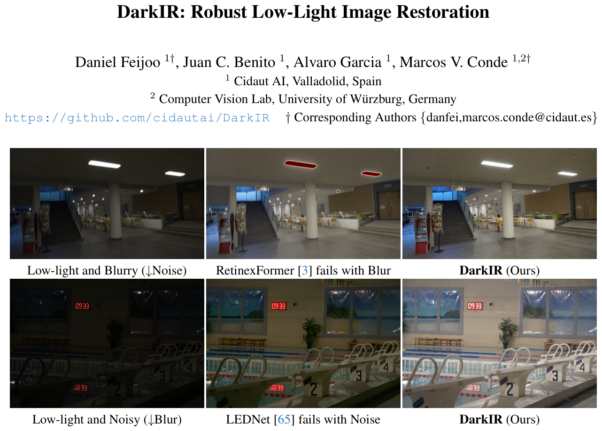
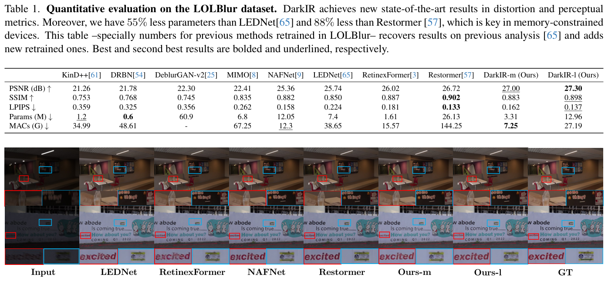
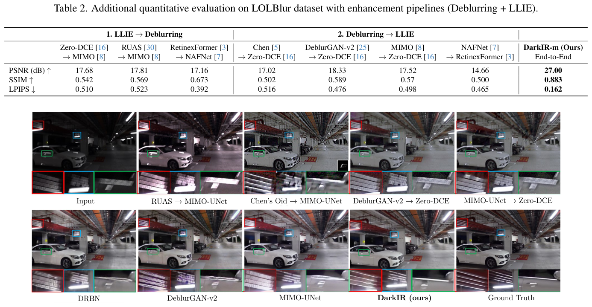
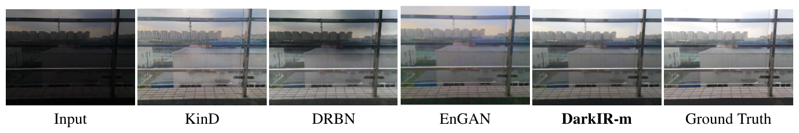
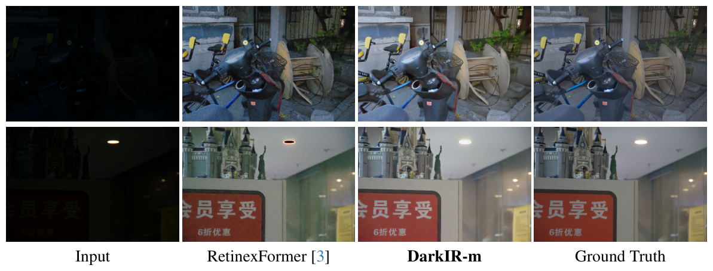
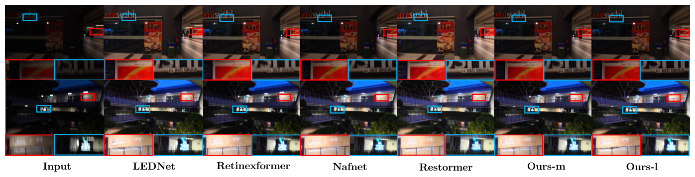

DarkIR: Phục Hồi Hình Ảnh Thiếu Sáng Mạnh Mẽ
2 Computer Vision Lab, Đại học Würzburg, CHLB Đức
† Tác giả liên hệ: {danfei, marcos.conde}@cidaut.es
DarkIR: Phục hồi hình ảnh thiếu sáng mạnh mẽ (DarkIR: Robust Low-Light Image Restoration)
Daniel Feijoo $^{1\dagger}$, Juan C. Benito $^1$, Alvaro Garcia $^1$, Marcos V. Conde $^{1,2\dagger}$ $^1$ Cidaut AI, Valladolid, Tây Ban Nha $^2$ Computer Vision Lab, Đại học Würzburg, Đức Mã nguồn: https://github.com/cidautai/DarkIR | $^\dagger$ Tác giả liên hệ: {danfei, marcos.conde@cidaut.es}

Hình 1. Các phương pháp Tăng cường hình ảnh thiếu sáng (LLIE) và phục hồi trước đây không mạnh mẽ trước hiện tượng mờ nhòe và biến đổi độ sáng. Mô hình đa nhiệm của chúng tôi có khả năng phục hồi ảnh thiếu sáng thực tế dưới các điều kiện độ rọi, nhiễu và độ mờ biến thiên. Phóng to để xem chi tiết.
Tóm tắt (Abstract)
Nhiếp ảnh ban đêm hoặc trong điều kiện tối tăm thường chịu ảnh hưởng đồng thời bởi nhiễu, thiếu sáng và hiện tượng nhòe mờ do môi trường ánh sáng yếu và việc thường xuyên phải dùng thời gian phơi sáng dài. Mặc dù Khử mờ (Deblurring) và Tăng cường hình ảnh thiếu sáng (Low-Light Image Enhancement - LLIE) có mối liên hệ mật thiết trong những điều kiện này, hầu hết các hướng tiếp cận phục hồi hình ảnh hiện nay đều giải quyết các bài toán này một cách riêng biệt. Trong bài báo này, chúng tôi đề xuất một mạng nơ-ron hiệu quả và mạnh mẽ cho tác vụ phục hồi hình ảnh thiếu sáng đa nhiệm. Thay vì đi theo xu hướng hiện nay của các mô hình dựa trên Transformer, chúng tôi đề xuất các cơ chế chú ý (attention mechanism) mới nhằm mở rộng trường tiếp nhận (receptive field) của các mạng CNN hiệu năng cao. Phương pháp của chúng tôi cắt giảm đáng kể chi phí tính toán xét về tham số và số phép toán MAC so với các phương pháp trước đây. Mô hình của chúng tôi, DarkIR, đạt được các kết quả hiện đại nhất (SOTA) mới trên các bộ tiêu chuẩn đánh giá (benchmark) phổ biến gồm LOLBlur, LOLv2 và Real-LOLBlur, đồng thời có khả năng tổng quát hóa xuất sắc trên ảnh chụp đêm và vùng tối trong thế giới thực.
💡 Giải Mã Bản Chất Động Lực: Tại Sao Lại Cần Phục Hồi Ảnh Thiếu Sáng Đa Nhiệm?
Hãy tưởng tượng bạn đang dạo bước trên phố đi bộ vào đêm giao thừa rực rỡ ánh đèn. Bạn rút chiếc điện thoại thông minh trong túi ra để chụp lại khoảnh khắc gia đình đang tươi cười. Mắt bạn nhìn thấy cảnh tượng rất lung linh, nhưng khi bấm nút chụp, bức ảnh hiện ra trên màn hình điện thoại lại khiến bạn vô cùng thất vọng: vừa tối om mù mịt, vừa xuất hiện đầy những chấm hạt "muỗi bay" lấm tấm, lại vừa nhòe nhoẹt vệt bóng ma vì tay bạn vô tình khẽ run hoặc người thân vừa chuyển động bước chân.
Tại sao lại xảy ra hiện tượng "thảm họa ba tầng" này? Trong ngành nhiếp ảnh quang học và thị giác máy tính, hiện tượng này được gọi là Tam giác suy thoái ảnh đêm (Nighttime Degradation Triad):
- Thiếu quang tử (Photon Scarcity): Môi trường ban đêm có quá ít hạt ánh sáng bay vào ống kính, khiến cảm biến không thu thập đủ năng lượng để kích hoạt điện áp pixel. Bức ảnh đầu tiên bị suy thoái là thiếu sáng trầm trọng (underexposure).
- Khuếch đại nhiễu cảm biến (Sensor Noise Amplification): Để cứu vãn độ tối, bộ xử lý máy ảnh tự động đẩy độ nhạy sáng ISO lên cực đại (ví dụ ISO 3200 hoặc 6400). Khi tăng độ nhạy điện, mạch điện tử khuếch đại luôn cả các dao động nhiệt ngẫu nhiên của các electron, tạo ra một lớp nhiễu hạt dày đặc bao phủ toàn bộ bức ảnh.
- Vệt mờ nhòe do phơi sáng dài (Motion Blur from Long Exposure): Để gom thêm chút ít ánh sáng khả dụng, thuật toán camera buộc phải kéo dài thời gian mở màn trập (ví dụ từ 1/1000 giây vào ban ngày xuống còn 1/15 hoặc 1/4 giây vào ban đêm). Trong khoảng thời gian dài đằng đẵng đó đối với cảm biến, chỉ cần nhịp đập của tim người chụp làm rung ngón tay, hoặc gió thổi nhẹ, vệt sáng đã bị quét loang trên bề mặt cảm biến thành các vệt nhòe chuyển động.
Trước công trình DarkIR, cộng đồng nghiên cứu thị giác máy tính thế giới thường tiếp cận theo tư duy chia nhỏ vấn đề một cách cơ học: nhóm chuyên gia về Low-Light Image Enhancement (LLIE) chỉ tập trung giải quyết bài toán nâng sáng (giả định ảnh không bị mờ), còn nhóm chuyên gia về Deblurring chỉ tập trung vào việc khử mờ (giả định ảnh đã đủ sáng ban ngày).
Khi áp dụng vào thực tế đêm tối, sự tách rời này dẫn đến thất bại hệ thống:
- Mô hình chỉ tăng sáng (như Retinexformer): Phát hiện vùng tối, nó dùng mạng nơ-ron đẩy độ sáng các điểm ảnh lên. Nhưng ẩn sâu trong vùng tối ấy đã có sẵn những vệt mờ rung tay. Khi đẩy sáng lên một cách mù quáng, các vệt mờ này bị phóng đại và khuếch đại thành những quầng sáng bệt khổng lồ (blurry bright patches), làm biến dạng hoàn toàn khuôn mặt và cảnh vật (như minh họa tại Hình 1 hàng trên của bài báo).
- Mô hình chỉ khử mờ (như Restormer): Các thuật toán khử mờ hoạt động dựa trên việc tính toán gradient không gian để tìm ra các gờ mép (edges) của vật thể. Nhưng trong một bức ảnh tối om đen kịt, giá trị pixel xấp xỉ bằng 0, độ chênh lệch gradient hầu như triệt tiêu. Mạng khử mờ rơi vào trạng thái "mù lòa", không nhận diện được đâu là cạnh thật đâu là vệt mờ, từ đó sinh ra các cấu trúc ảo giác sai lệch (hallucination artifacts).
- Quy trình ghép nối nối tiếp (Cascaded Pipeline): Nếu ta cố gắng dùng một mô hình tăng sáng trước rồi đưa kết quả cho một mô hình khử mờ sau, sai số và ảo giác của mô hình thứ nhất sẽ trở thành nhiễu độc hại đầu vào cho mô hình thứ hai, gây ra hiện tượng tích lũy sai số theo cấp số nhân (exponential error cascading), vừa tốn gấp đôi thời gian tính toán và bộ nhớ GPU, vừa cho ra chất lượng ảnh tồi tệ.
| Ký Hiệu | Tên Tiếng Anh Chuẩn | Tên Tiếng Việt Chính Xác | Ý Nghĩa Đời Thường Dễ Hiểu |
|---|---|---|---|
| $$\mathbf{y}$$ | Observed Degraded Image | Ảnh quan sát bị suy thoái | Bức ảnh thực tế chụp bằng điện thoại ban đêm: vừa tối om, vừa đầy nhiễu hạt, vừa nhòe rung tay. |
| $$\mathbf{x}$$ | Ground Truth Sharp Image | Ảnh gốc lý tưởng chân thực | Khung cảnh hoàn hảo ban ngày hoặc chụp bằng chân máy ảnh vững chắc, đủ sáng, không một hạt nhiễu. |
| $$\mathbf{k}$$ | Blur Kernel / PSF | Hàm tán xạ điểm gây mờ | Chiếc "cọ vẽ vô hình" quét ngang quét dọc khi tay bạn run trong lúc mở màn trập máy ảnh. |
| $$\mathbf{n}$$ | Additive Sensor Noise | Nhiễu cảm biến cộng tính | Những chấm hạt "muỗi bay" lấm tấm do cảm biến điện tử sinh ra khi phải khuếch đại điện áp ở ISO cao. |
| $$\text{PSNR}$$ | Peak Signal-to-Noise Ratio | Tỷ số tín hiệu trên nhiễu cực đại | Thước đo độ sạch và độ giống pixel giữa ảnh phục hồi và ảnh gốc (đơn vị dB, càng cao càng tốt). |
| $$\text{SSIM}$$ | Structural Similarity Index | Chỉ số tương đồng cấu trúc | Đo xem đường nét, hình khối, bóng đổ của vật thể có bị biến dạng hay không (thang từ 0 đến 1). |
1. Giới thiệu (1. Introduction)
Trong điều kiện ban đêm hoặc ánh sáng yếu, chúng ta có thể mô hình hóa quá trình hình thành hình ảnh như sau:
trong đó $\mathbf{y}$ là hình ảnh tối quan sát được, $\mathbf{x}$ là khung cảnh chụp gốc không bị suy giảm, $\mathbf{k}$ biểu thị kernel làm mờ (hàm phân tán điểm - point-spread function hay PSF) của ống kính, $\mathbf{n}$ là nhiễu cảm biến cộng tính, và $\gamma$ là một hàm điều khiển dải động và độ bão hòa điểm ảnh. Chúng tôi sử dụng $\otimes$ để biểu diễn toán tử tích chập.
So với điều kiện ban ngày, trong điều kiện ánh sáng yếu, độ nhiễu (bao gồm nhiễu hạt photon và nhiễu đọc cảm biến) cao hơn đáng kể. Khi chụp ảnh ban đêm, máy ảnh thường sử dụng thời gian phơi sáng dài (tốc độ màn trập chậm) để cho phép nhiều ánh sáng khả dụng đi vào cảm biến hơn. Tuy nhiên, thời gian phơi sáng dài dễ dẫn đến hiện tượng bóng ma (ghosting) và các hiệu ứng giả nhòe mờ (blurring artifacts). Những suy giảm chất lượng này càng trở nên nghiêm trọng trên điện thoại thông minh do khẩu độ cố định và hệ thống quang học giới hạn. Vì những lý do này, việc kết hợp đồng thời tăng cường hình ảnh thiếu sáng và khử mờ là yếu tố sống còn cho nhiếp ảnh điện toán di động [12, 65] — xem các mẫu minh họa tại Hình 1.
Trong mọi hoàn cảnh thực tế, hình ảnh thu được đều biểu hiện những mức độ nhiễu và nhòe mờ nhất định [13]. Bằng cách sử dụng chân máy (tripod) để cố định góc chụp, chúng ta có thể giảm đáng kể độ mờ. Hơn nữa, nếu có hệ thống chiếu sáng thích hợp, độ nhiễu cũng có thể được triệt tiêu [1, 20].
Tuy nhiên, ngày nay phần lớn các bức ảnh đều được chụp bằng điện thoại thông minh cầm tay. Do kích thước cảm biến và hệ quang học hạn chế, các thiết bị này sử dụng các Bộ xử lý tín hiệu hình ảnh (ISP) phức tạp hơn [10, 12] so với máy ảnh không gương lật ống kính đơn kỹ thuật số (DSLM). Nhiếp ảnh di động hiện vẫn còn khoảng cách so với các tiêu chuẩn chất lượng của DSLM; tuy nhiên, các nghiên cứu gần đây trong lĩnh vực thị giác máy tính mức thấp (low-level computer vision) và nhiếp ảnh điện toán đang từng bước thu hẹp khoảng cách này. Tăng cường hình ảnh thiếu sáng (LLIE) [3, 14, 30, 31, 45, 64], khử mờ hình ảnh [21, 25, 38, 40] và nâng cao chất lượng ảnh chụp đêm [42, 65] là những bài toán nghiên cứu đang rất được quan tâm.
Chẳng hạn, việc ngăn chặn độ mờ do rung tay khi chụp đã được nghiên cứu sâu rộng, ngay cả trong môi trường thiếu sáng [29, 62]. Tuy nhiên, trong phần lớn trường hợp, các bài toán này vẫn được xử lý riêng biệt; vì vậy, các phương pháp khử mờ hiện đại nhất (SOTA) không tổng quát hóa tốt cho ảnh ban đêm, và các phương pháp tăng cường thiếu sáng tốt nhất lại không thể triệt tiêu độ mờ rõ rệt. Đây là một hạn chế lớn, bởi người dùng buộc phải tinh chỉnh (fine-tuning), lưu trữ và ghép nối tuần tự nhiều mô hình chuyên biệt, từ đó gây cản trở việc triển khai thực tế.
Theo hiểu biết của chúng tôi, rất ít công trình hướng tới việc giải quyết đồng thời các tác vụ này (khử nhiễu, khử mờ và LLIE) theo phương thức đầu-cuối kết hợp (joint end-to-end) [6, 33, 63, 65], trong đó LEDNet [65] là công trình nổi bật nhất. Chúng tôi theo đuổi hướng nghiên cứu này vì việc khai thác mối tương quan giữa các dạng suy giảm chất lượng cho phép đạt hiệu năng cao nhất về khả năng tái tạo hình ảnh, tính ứng dụng và hiệu quả vận hành.
Đóng góp của chúng tôi: Chúng tôi đề xuất một mạng nơ-ron tích chập (CNN) hoạt động đồng thời trên cả miền không gian và miền tần số. Trong miền không gian, chúng tôi tập trung triệt tiêu nhiễu $\mathbf{n}$ và độ mờ không đồng nhất $\mathbf{k}$ thông qua cơ chế chú ý không gian có trường tiếp nhận lớn (large receptive field spatial attention). Mặt khác, trong miền Fourier, chúng tôi có thể cải thiện điều kiện thiếu sáng một cách dễ dàng [28, 44] nhờ bản chất toàn cục của bài toán. Các đóng góp chính gồm:
- 1. Thiết kế mạng nơ-ron gọn nhẹ với cơ chế chú ý tần số và cơ chế chú ý trường tiếp nhận lớn, kết hợp hài hòa thông tin không gian và tần số.
- 2. Mô hình DarkIR đạt kết quả hiện đại nhất (SOTA) trên các bộ tiêu chuẩn đánh giá (benchmark) phổ biến LOLBlur và Real-LOLBlur [65], tăng hơn +1dB PSNR so với LEDNet [65], đồng thời giảm bớt chi phí tính toán.
- 3. DarkIR thiết lập một mô hình cơ sở (baseline) mới cho tác vụ nâng cao chất lượng ảnh đêm/tối đa nhiệm.
🔬 Mổ Xẻ Phương Trình Suy Thoái Quang Học: $\mathbf{y} = \gamma(\mathbf{x} \otimes \mathbf{k}) + \mathbf{n}$
Đối với người học sâu, công thức $\mathbf{y} = \gamma(\mathbf{x} \otimes \mathbf{k}) + \mathbf{n}$ không đơn thuần là một chuỗi ký tự đại số, mà là một thước phim quay chậm mô tả hành trình của một chùm hạt photon từ ngoài đời thực đi vào bộ nhớ chip nhớ điện thoại:
- $\mathbf{x}$ (Khung cảnh thực tế): Ma trận cường độ phản xạ ánh sáng gốc của vật thể trong không gian 2 chiều. Đây chính là "đích đến chân lý" (Ground Truth) mà mạng nơ-ron của chúng ta phải tìm cách khôi phục lại.
- $\mathbf{k}$ (Hàm tán xạ điểm - Point Spread Function, hay Blur Kernel): Hãy hình dung một điểm sáng đơn lẻ trên ngọn đèn đường. Khi máy ảnh đứng yên hoàn toàn, điểm sáng đó hội tụ vào đúng 1 pixel trên cảm biến. Nhưng khi tay người chụp rung lắc theo quỹ đạo đường cong trong suốt $0.2$ giây phơi sáng, điểm sáng đó bị kéo thành một vệt dài uốn lượn phủ qua hàng chục pixel lân cận. Hàm $\mathbf{k}$ chính là bản đồ phân bố trọng số của vệt kéo đó!
- $\otimes$ (Toán tử tích chập không gian 2D): (Liên hệ tài nguyên nền tảng `AIO2025_Reading_CNNs.pdf`) Phép tích chập là thao tác trượt ma trận trọng số $\mathbf{k}$ lên khắp các điểm ảnh của $\mathbf{x}$. Về mặt toán học, phép tích chập làm phẳng và nhòe tín hiệu, triệt tiêu các thành phần tần số cao (các gờ cạnh sắc nét) và làm cho màu sắc giữa các pixel láng giềng bị hòa lẫn vào nhau.
- $\gamma(\cdot)$ (Hàm phi tuyến dải động và bão hòa điểm ảnh): Cảm biến kỹ thuật số không thể ghi nhận cường độ ánh sáng vô hạn. Nó bị giới hạn bởi ngưỡng cắt bão hòa (Saturation Clipping): mọi pixel vượt quá ngưỡng trên đều bị biến thành màu trắng xóa tinh khôi (giá trị 255), trong khi mọi pixel dưới ngưỡng sàn nhạy cảm quang đều bị cắt cụt về màu đen kịt (giá trị 0). Ngoài ra, các nhà sản xuất áp dụng đường cong Tone Mapping phi tuyến để nén dải động (Dynamic Range Compression), làm cho mối quan hệ giữa photon thực tế và giá trị pixel kỹ thuật số trở nên cực kỳ phi tuyến và phức tạp.
- $\mathbf{n}$ (Nhiễu cảm biến cộng tính): Là sự kết hợp của hai hiện tượng vật lý:
— Nhiễu hạt photon (Photon Shot Noise): Do tính chất lượng tử rời rạc của ánh sáng, khi nguồn sáng quá yếu, số lượng hạt photon rơi vào cảm biến trong một khoảng thời gian tuân theo phân phối xác suất Poisson.
— Nhiễu đọc điện tử (Read Noise): Nhiễu nhiệt phát sinh từ quá trình khuếch đại điện áp của bộ chuyển đổi tương tự sang số (ADC) trên chip bán dẫn cảm biến, tuân theo phân phối xác suất Gaussian.
Nhiều người thường đặt câu hỏi: "Tại sao các nhiếp ảnh gia cầm máy ảnh Canon hay Sony to đùng chụp đêm vẫn ra ảnh rất nét, còn điện thoại flagship chụp đêm lại dễ bị rung mờ?"
Câu trả lời nằm ở giới hạn vật lý quang học (Optical Physics Constraints):
Cảm biến của máy ảnh Full-frame có kích thước $36 \times 24\text{ mm}$, với diện tích mỗi điểm ảnh (pixel pitch) từ $4.3\mu\text{m}$ đến $8.4\mu\text{m}$. Trong khi đó, cụm camera điện thoại dù cao cấp đến đâu cũng chỉ có kích thước cảm biến cỡ $1/1.33"$ hoặc $1/2.55"$, với kích thước điểm ảnh tí hon chỉ từ $0.8\mu\text{m}$ đến $1.4\mu\text{m}$. Vì diện tích thu sáng của mỗi điểm ảnh điện thoại nhỏ hơn từ 10 đến 25 lần so với máy ảnh cơ, lượng photon thu được trong mỗi micro-giây là cực kỳ ít ỏi!
Để bù lại sự thiếu hụt quang tử trầm trọng này, các kỹ sư phần mềm di động chỉ có 2 lựa chọn: hoặc đẩy ISO cực cao (khiến nhiễu hạt $\mathbf{n}$ bùng nổ), hoặc kéo dài thời gian phơi sáng (khiến vệt mờ $\mathbf{k}$ quét dài). Đó là lý do tại sao bài toán mà DarkIR giải quyết chính là "chén thánh" sống còn của ngành nhiếp ảnh điện toán di động (Mobile Computational Photography).
| Ký Hiệu | Tên Tiếng Anh Chuẩn | Tên Tiếng Việt Chính Xác | Ý Nghĩa Đời Thường Dễ Hiểu |
|---|---|---|---|
| $$\otimes$$ | 2D Spatial Convolution | Toán tử tích chập không gian 2D | Phép trượt nhân ma trận làm màu sắc các điểm ảnh lân cận bị hòa trộn và nhòe vào nhau. |
| $$\text{PSF}$$ | Point-Spread Function | Hàm lan truyền điểm quang học | Bản đồ thể hiện một điểm sáng li ti bị kéo lê thành một vệt nhòe dài bao nhiêu pixel khi tay rung. |
| $$\gamma(\cdot)$$ | Dynamic Range & Tone Operator | Toán tử dải động & bão hòa | Bộ phận cắt cụt pixel quá tối về màu đen kịt (0) và pixel quá sáng về màu trắng xóa (255). |
| $$\text{ISP}$$ | Image Signal Processor | Bộ xử lý tín hiệu hình ảnh | Con chip phần cứng chuyên dụng trên điện thoại làm nhiệm vụ biến đổi dữ liệu thô RAW từ cảm biến thành ảnh JPEG/PNG. |
| $$\text{DSLM}$$ | Digital Single-Lens Mirrorless | Máy ảnh kỹ thuật số không gương lật | Dòng máy ảnh chuyên nghiệp cao cấp ống kính rời có cảm biến lớn để chụp ảnh chất lượng cao. |
2. Các công trình liên quan (2. Related Work)
Khử mờ hình ảnh (Image Deblurring): Đã có hàng thập kỷ nghiên cứu về việc tái tạo những khung cảnh sắc nét. Quá trình khử mờ ảnh được chia thành các phương pháp không mù (non-blind) và phương pháp mù (blind). Trong khi các phương pháp non-blind dựa vào kernel làm mờ $\mathbf{k}$ (hoặc hàm phân tán điểm PSF) đã biết để xử lý, thì các phương pháp blind không có bất kỳ thông tin tiên nghiệm nào về dạng suy giảm làm mờ.
Những năm gần đây, nhiều giải pháp dựa trên học sâu đã được đề xuất cho cả khử mờ blind và non-blind [25, 38], vượt trội so với các phương pháp truyền thống ở cả hai kịch bản. Các phương pháp tiếp cận non-blind đem lại giải pháp ưu việt khi chỉ yêu cầu các cặp ảnh mờ-nét để huấn luyện mô hình mà không cần ước lượng PSF hay cấu hình cảm biến. Hầu hết các cách tiếp cận này đều độc lập với cảm biến (sensor-agnostic), nghĩa là chúng có thể xử lý tốt hình ảnh sRGB thu nhận từ nhiều loại máy ảnh khác nhau.
Hiện nay, phần lớn các phương pháp này được xây dựng trên nền tảng mạng nơ-ron tích chập (CNN) [4, 25, 37, 57]. Trong DeblurGAN [25], các tác giả ứng dụng Mạng đối nghịch tạo sinh (GAN) để giải quyết vấn đề. Gần đây hơn, nhóm tác giả trong [24] đã triển khai một mô hình Transformer dựa trên miền tần số hiệu quả cho bài toán khử mờ. Ngoài ra còn có các phương pháp tối ưu hóa lặp và mô hình khuếch tán (diffusion models) [33, 49].
Tăng cường hình ảnh thiếu sáng (Low-Light Image Enhancement - LLIE): Các phương pháp sơ khởi thường dựa trên đặc tính thống kê ảnh hoặc thông tin tiên nghiệm [2, 18], phần lớn dựa trên Thuyết Retinex kinh điển [26].
Theo đà phát triển của học sâu, các phương pháp LLIE hiện đại chủ yếu dựa trên Mạng nơ-ron tích chập (CNN) như RetinexNet [48] (cùng tập dữ liệu LOL đi kèm), ZeroDCE [16] và SCI [35]. Những nghiên cứu mới nhất tiếp tục khai phá năng lực của Transformer trong tác vụ này, điển hình là RetinexFormer [3], hoặc tận dụng thông tin miền tần số Fourier để tăng cường biên độ ảnh, tiêu biểu là FourLLIE [44].
Khử mờ và tăng cường trong điều kiện thiếu sáng (Low-Light Blur Enhancement): Mặc dù khử mờ và tăng cường thiếu sáng là hai bài toán thu hút nhiều sự quan tâm, việc giải quyết đồng thời cả hai lại là một thách thức lớn và có rất ít công trình nghiên cứu trực diện [6, 33, 63, 65]. NBDN [6] đề xuất một mạng non-blind nhằm nâng cao chất lượng ảnh đêm bị bão hòa sáng. Khi giải tích chập ảnh để phục hồi độ sắc nét, thuật toán phải xử lý đồng thời cả nhiễu lẫn các vùng bão hòa. Nhóm tác giả đã chỉ ra rằng các phương pháp trước đó đều gặp khó khăn lớn trước bài toán hỗn hợp này.
Mặt khác, với LEDNet [65], các tác giả tìm cách giải bài toán tăng cường thiếu sáng khi giả định hình ảnh cũng bị nhòe mờ. Đây là một giả định rất sát thực tế do smartphone bắt buộc phải kéo dài thời gian phơi sáng trong bóng tối. Họ đã phát triển một kiến trúc mã hóa - giải mã (encoder-decoder) và giới thiệu hai bộ dữ liệu chuẩn phổ biến LOLBlur và Real-LOLBlur.
⚖️ Đối Chiếu Ba Trường Phái Nghiên Cứu & Đột Phá Bất Đối Xứng Của DarkIR
Để bảo vệ đề tài trước hội đồng khoa học, học viên cần nắm vững bản đồ tổng quan các công trình tiền nhiệm. Các phương pháp trong quá khứ được chia thành 3 trường phái chính:
| Trường Phái Nghiên Cứu | Công Trình Tiêu Biểu | Cơ Chế Hoạt Động Cốt Lõi | Tử Huyệt (Điểm Nghẽn Khi Gặp Ảnh Đêm) |
|---|---|---|---|
| 1. Chỉ tăng sáng (Pure LLIE) | RetinexNet, Zero-DCE, KinD, Retinexformer | Dựa trên lý thuyết Retinex phân tách ảnh thành Bản đồ Chiếu sáng (Illumination) và Bản đồ Phản xạ (Reflectance). | Giả định ảnh đứng yên, không mờ. Khi ảnh rung, nâng sáng làm bùng nổ các vệt nhòe thành quầng sáng bệt thị giác kinh hoàng. |
| 2. Chỉ khử mờ (Pure Deblur) | MPRNet, Restormer, NAFNet, FFTformer | Dùng các khối Attention hoặc tích chập đa tầng để khôi phục tần số cao bị mất do chuyển động. | Giả định ảnh đủ sáng ban ngày. Khi ảnh tối mù, gradient không gian bị triệt tiêu, mạng bị mù và tạo ra các chi tiết rác (hallucination). |
| 3. Ghép nối nối tiếp (Cascaded) | LLIE $\to$ Deblur hoặc Deblur $\to$ LLIE | Chạy một mô hình tăng sáng xong rồi lấy ảnh đầu ra đưa tiếp vào một mô hình khử mờ độc lập. | Tích lũy sai số theo cấp số nhân (Error Accumulation), độ trễ tính toán nhân đôi, tiêu tốn gấp đôi dung lượng bộ nhớ RAM/VRAM. |
Trước khi DarkIR xuất hiện, công trình nổi tiếng nhất giải quyết bài toán đồng thời này là LEDNet (CVPR 2023). LEDNet được coi là người tiên phong dám phá vỡ tư duy chia rẽ để xây dựng mô hình đầu-cuối thống nhất. Tuy nhiên, LEDNet mắc phải một nhược điểm chí mạng trong triết lý thiết kế:
LEDNet sử dụng kiến trúc đối xứng cồng kềnh: Cả Encoder và Decoder của LEDNet đều phải gánh đồng thời cả hai nhiệm vụ làm sáng và khử mờ ở mọi tầng mạng. Điều này dẫn đến cấu trúc mô hình bị phình to: số lượng tham số lên tới 7.4 triệu (7.4M params) và độ phức tạp tính toán đạt tới 144 GMACs. Với cấu hình này, LEDNet hoàn toàn bất khả thi khi muốn triển khai trên điện thoại di động hoặc các bộ xử lý biên thời gian thực.
Sự đổi mới mang tính cách mạng của DarkIR:
Các tác giả của DarkIR nhận ra một quy luật thị giác sâu sắc: "Tại sao phải bắt cả hai nửa mạng cùng làm hai việc nặng như nhau?"
- Nửa đầu (Encoder): Chỉ tập trung vào việc tăng cường độ sáng toàn cục bằng cách can thiệp vào phổ biên độ Fourier. Tác vụ này cực kỳ nhẹ nhàng về mặt tính toán vì chỉ cần một mạng Fre-MLP đơn giản!
- Nửa sau (Decoder): Sau khi ảnh đã được làm sáng đồng đều và đưa về tầng đáy, Decoder chỉ việc tập trung vào nhiệm vụ duy nhất là khử mờ không gian bằng các nhánh tích chập giãn nở Di-SpAM!
Nhờ triết lý thiết kế bất đối xứng này, DarkIR cắt giảm hơn 55% tham số (từ 7.4M xuống còn 3.31M), cắt giảm hơn 95% độ phức tạp tính toán (từ 144G xuống còn 7.25 GMACs), nhưng điểm số chất lượng ảnh PSNR lại tăng vọt thêm +1.26 dB trên tập chuẩn LOLBlur!
3. Phương pháp đề xuất (3. Method)
![Hình 2. Sơ đồ tổng quan của DarkIR. Mạng nơ-ron tuân theo kiến trúc bộ mã hóa - giải mã (encoder-decoder). Chúng tôi sử dụng các khối khác nhau cho quá trình mã hóa và giải mã theo cấu trúc Metaformer [56]. Bộ mã hóa tập trung vào các vấn đề chiếu sáng trong điều kiện ánh sáng yếu bằng cách sử dụng thông tin Fourier. Nhờ đó, bộ mã hóa tạo ra một hình ảnh tái tạo độ phân giải thấp ˆx↓8 với độ sáng đã được hiệu chỉnh. Bộ giải mã tập trung vào việc nâng độ phân giải (upscaling) và giảm độ mờ bằng cách sử dụng các đặc trưng đã được mã hóa tăng cường ánh sáng trước đó. Để đạt được điều này, bộ giải mã sử dụng cơ chế chú ý không gian có trường tiếp nhận lớn (large receptive field spatial attention). Thiết kế này cho phép mô hình gọn nhẹ của chúng tôi có ít tham số và FLOPs hơn so với các phương pháp trước đây.](../assets/images/papers/darkir/figure_02.png)
Hình 2. Sơ đồ tổng quan của DarkIR. Mạng nơ-ron tuân theo kiến trúc bộ mã hóa - giải mã (encoder-decoder). Chúng tôi sử dụng các khối khác nhau cho quá trình mã hóa và giải mã theo cấu trúc Metaformer [56]. Bộ mã hóa tập trung vào các vấn đề chiếu sáng trong điều kiện ánh sáng yếu bằng cách sử dụng thông tin Fourier. Nhờ đó, bộ mã hóa tạo ra một hình ảnh tái tạo độ phân giải thấp $\hat{x}_{\downarrow 8}$ với độ sáng đã được hiệu chỉnh. Bộ giải mã tập trung vào việc nâng độ phân giải (upscaling) và giảm độ mờ bằng cách sử dụng các đặc trưng đã được mã hóa tăng cường ánh sáng trước đó. Để đạt được điều này, bộ giải mã sử dụng cơ chế chú ý không gian có trường tiếp nhận lớn (large receptive field spatial attention). Thiết kế này cho phép mô hình gọn nhẹ của chúng tôi có ít tham số và FLOPs hơn so với các phương pháp trước đây.
Chúng tôi kế thừa triết lý Metaformer [56] để thiết kế mạng nơ-ron. Cấu trúc này tối giản hóa các kiến trúc Transformer thành các khối cơ bản gồm hai thành phần: cơ chế chú ý toàn cục (ví dụ: bộ trộn token - token mixer) và mạng truyền thẳng (feed-forward network - FFN, MLP). Dạng công thức chuẩn của các khối này là:
trong đó $z$ là các đặc trưng đầu vào và $z_2$ là các đặc trưng đầu ra của khối. Hầu hết các mô hình phục hồi hình ảnh phổ biến, ví dụ như NAFNet [7], đều áp dụng cấu trúc này và tinh chỉnh mô-đun chú ý (Attention module) cho phù hợp với từng tác vụ.
Chúng tôi phát triển cấu trúc Metaformer bằng cách xây dựng các khối chuyên biệt riêng cho LLIE và khử mờ. Ngoài ra, chúng tôi sử dụng cơ chế cổng đơn giản (simple gates - SG) và cơ chế chú ý kênh đơn giản hóa (simplified channel attention - SCA) thay thế cho các hàm kích hoạt phi tuyến thông thường tương tự [7].
Tăng cường ánh sáng yếu có thể giải quyết hiệu quả trong miền tần số:
Nhiều công trình nghiên cứu [28, 44] đã chứng minh rằng các điều kiện chiếu sáng yếu có mối tương quan rất cao với phổ biên độ (amplitude) của hình ảnh trong miền Fourier. Do đó, chỉ bằng cách tăng cường biên độ của hình ảnh (và giữ nguyên pha), chúng ta có thể hiệu chỉnh đáng kể độ sáng của bức ảnh. Hơn nữa, đặc tính này luôn nhất quán trên nhiều thang độ phân giải khác nhau [28]. Do đó, chúng ta có thể ước lượng một hình ảnh đã tăng cường ánh sáng ở độ phân giải thấp rồi nâng kích thước lên.
Làm sắc nét và giảm nhòe mờ đòi hỏi trường tiếp nhận lớn: Yêu cầu này thường đạt được bằng cách trích xuất các đặc trưng tầng sâu song song với việc giảm mẫu hình ảnh — như hướng tiếp cận của NAFNet [7]. Một giải pháp thay thế là sử dụng kernel tích chập kích thước lớn [32], tuy nhiên điều này làm tăng đáng kể độ phức tạp tính toán và dung lượng bộ nhớ.
Mô hình DarkIR: Trong Hình 2, chúng tôi trực quan hóa kiến trúc mô hình. Khác với phần lớn các giải pháp trước đây, chúng tôi sử dụng hai khối thiết kế khác nhau cho bộ mã hóa (encoder) và bộ giải mã (decoder). Ý tưởng chủ đạo đằng sau thiết kế bất đối xứng này là thực hiện tăng cường ánh sáng yếu ở độ phân giải thấp ngay trong bộ mã hóa, sau đó khử mờ nhòe trong bộ giải mã, tương tự chiến lược của LEDNet [65]. Bộ giải mã sẽ tiếp nhận các đặc trưng đã được tăng cường ánh sáng từ bộ mã hóa, tập trung toàn lực vào việc nâng mẫu và làm sắc nét bức ảnh tái tạo độ phân giải thấp $\hat{x}_{\downarrow 8}$.
Đối với khối mã hóa nhằm phục hồi điều kiện thiếu sáng, chúng tôi thao tác trong miền Fourier [28, 44]. Đối với khối giải mã, mạng tập trung xử lý trong miền không gian bằng cách tích hợp các phép tích chập giãn nở (dilated convolutions) có trường tiếp nhận lớn. Việc sử dụng các khối chuyên biệt cho từng tác vụ cho phép chúng tôi giảm bớt tổng số lượng khối. Thiết kế này giúp cắt giảm đáng kể số lượng tham số cũng như chi phí tính toán xét về MAC (phép nhân-cộng tích lũy) và FLOPs (phép tính dấu phẩy động mỗi giây).
Làm sao để đảm bảo Bộ mã hóa đang thực sự tăng cường ánh sáng yếu? Như mô tả trên Hình 2, các đặc trưng mã hóa được kết hợp tuyến tính thông qua một lớp tích chập để tạo thành một biểu diễn hình ảnh trung gian $\hat{x}_{\downarrow 8}$. Chúng tôi sử dụng biểu diễn này để điều chuẩn mô hình thông qua một hàm mất mát bổ sung. Việc tạo ra một biểu diễn độ phân giải thấp chất lượng tốt đảm bảo rằng phổ biên độ trong miền Fourier đã được tăng cường chính xác.
3.1. Bộ mã hóa tăng cường thiếu sáng (Low-light Enhancement Encoder)
Chúng tôi thiết kế các khối mã hóa (EBlock) để tăng cường điều kiện chiếu sáng yếu của hình ảnh bằng cách sử dụng thông tin Fourier, tuân thủ cấu trúc Metaformer [56] (và NAFBlock [7]). Khối này gồm hai thành phần: mô-đun chú ý không gian (spatial attention module - SpAM) và mạng truyền thẳng trong miền tần số (frequency domain feed-forward network - FreMLP).
Mô-đun chú ý không gian tương tự NAFBlock [7] với một khối phần dư nghịch đảo (inverted residual block) theo sau bởi cơ chế chú ý kênh đơn giản hóa (simplified channel attention - SCA). Thay vì sử dụng các hàm kích hoạt phi tuyến, chúng tôi áp dụng cơ chế cổng đơn giản (simple gating), cho phép mô hình trích xuất các thông tin không gian ý nghĩa phục vụ cho quá trình tăng cường trong miền tần số.
Theo các nghiên cứu trước đây [33, 44], thông tin liên quan đến điều kiện chiếu sáng của hình ảnh chủ yếu phụ thuộc vào phổ biên độ (amplitude) trong miền tần số. Để tăng cường thành phần này, chúng tôi áp dụng Biến đổi Fourier Nhanh (FFT) và chỉ thao tác trên biên độ của nó. Sau thao tác này, chúng tôi chuyển ngược về miền không gian bằng Biến đổi Fourier Nhanh Ngược (IFFT). Mạng Fre-MLP đóng vai trò như một cơ chế chú ý bổ sung. Trong ngữ cảnh này, MLP hoạt động trên biên độ đem lại nhiều lợi ích vượt trội hơn so với hoạt động trong miền không gian (ví dụ: channel MLP [56]).
Bộ mã hóa sử dụng các phép tích chập có bước nhảy (strided convolutions) để giảm mẫu các đặc trưng. Sau mỗi cấp độ, các đặc trưng bị giảm một nửa độ phân giải không gian ban đầu, điều này đồng nghĩa với việc chúng ta có thể bố trí nhiều khối mã hóa hơn ở các cấp độ sâu mà không làm gia tăng đáng kể số lượng phép tính.
Cuối cùng, bộ mã hóa sẽ cung cấp các đặc trưng đã được tăng cường ánh sáng cho bộ giải mã, cùng với một ước tính độ phân giải thấp của ảnh sạch x. Ảnh độ phân giải thấp $\hat{x}_{\downarrow 8}$ này được ước tính thông qua tổ hợp tuyến tính các đặc trưng sâu của bộ mã hóa, có độ phân giải thấp hơn 8 lần ($8\times$) so với ảnh gốc. Dù là một ước tính kích thước nhỏ, đặc tính chiếu sáng (và biên độ) luôn nhất quán qua các thang đo tỷ lệ khác nhau [28].
🌈 Bản Chất Kỳ Diệu Của Biến Đổi Fourier: Tách Rời Độ Sáng Toàn Cục & Cấu Trúc Chi Tiết
Đối với rất nhiều sinh viên và học viên cao học, Biến đổi Fourier (Fast Fourier Transform - FFT) luôn là một nỗi ám ảnh bởi công thức số phức $F(u, v) = \sum \sum f(x, y) e^{-j 2\pi (ux/M + vy/N)}$. Tuy nhiên, khi áp dụng vào thị giác máy tính và phục hồi ảnh thiếu sáng, bản chất vật lý của nó lại vô cùng đẹp đẽ và dễ hiểu:
Một ma trận ảnh số thực chất là sự chồng chập của vô số sóng sin và cosin ở các tần số khác nhau. Khi thực hiện biến đổi Fourier 2 chiều ($\mathcal{F}$), tại mỗi vị trí tần số $(u, v)$, ta thu được một số phức gồm phần thực $R(u, v)$ và phần ảo $I(u, v)$. Từ số phức này, ta tách thành hai thành phần độc lập:
- Phổ Biên độ (Amplitude Spectrum): $$\mathcal{A}(u, v) = |F(u, v)| = \sqrt{R(u, v)^2 + I(u, v)^2}$$ Biên độ đo lường độ lớn năng lượng của từng tần số. Trong ảnh số, thành phần tần số cực thấp (tọa độ trung tâm $u=0, v=0$, hay còn gọi là thành phần DC) và các vùng lân cận chứa hầu như 95% năng lượng ánh sáng. Nó quyết định độ sáng tổng thể, độ phơi sáng toàn cục và độ tương phản chung của bức ảnh!
- Phổ Pha (Phase Spectrum): $$\mathcal{P}(u, v) = \angle F(u, v) = \arctan\left(\frac{I(u, v)}{R(u, v)}\right)$$ Pha đo lường sự dịch chuyển vị trí của các bước sóng sin. Một thí nghiệm kinh điển của Oppenheim & Lim (1981) đã chứng minh: nếu bạn lấy Pha của bức ảnh con Mèo ghép với Biên độ của bức ảnh con Chó rồi biến đổi ngược Fourier, bức ảnh kết quả hiện ra hoàn toàn là hình dáng con Mèo (chỉ bị sai lệch về độ sáng)! Điều này khẳng định rằng: Toàn bộ thông tin cấu trúc, đường viền, mép cạnh hình học của vật thể đều nằm trọn vẹn trong Phổ Pha!
Hãy tưởng tượng căn nhà của bạn trong màn đêm tối tăm.
— Phổ Pha $\mathcal{P}$ chính là bản vẽ kết cấu kiến trúc: vị trí các bức tường gạch, cột bê tông, cánh cửa sổ, và các món đồ nội thất.
— Phổ Biên độ $\mathcal{A}$ chính là chiếc núm vặn điều chỉnh độ sáng (Dimmer switch) của chiếc đèn chùm treo giữa trần nhà.
Khi căn phòng bị tối, nếu bạn là một người thợ vụng về cố gắng đi sơn lại từng viên gạch (tương tự như các mô hình CNN truyền thống can thiệp từng pixel ở miền không gian), bạn sẽ làm loang lổ màu sơn và làm bẩn các đường viền mép tường.
Ngược lại, các tác giả của DarkIR hành động như một kỹ sư thông minh: Họ giữ nguyên bản vẽ kiến trúc (giữ nguyên góc Pha $\mathcal{P}$ không đụng đến), và chỉ dùng một mạng nơ-ron đa tầng gọn nhẹ (Fre-MLP) để vặn núm công tắc đèn trần lên (tinh chỉnh Phổ Biên độ $\mathcal{A}$). Toàn bộ bức ảnh bừng sáng rực rỡ từ bên trong một cách đồng đều, tự nhiên, trong khi mọi đường gờ cạnh sắc nét của vật thể được bảo tồn 100% nguyên vẹn!
(Liên hệ sâu sắc với tài nguyên ôn tập `AIO_Solution_Swin_CNN.pdf`)
Trong những năm gần đây, xu hướng lạm dụng Vision Transformer (ViT) và Self-Attention diễn ra khắp nơi. Tuy nhiên, đối với bài toán phục hồi ảnh độ phân giải cao, Transformer bộc lộ "tử huyệt" nghiêm trọng về chi phí tính toán:
- Độ phức tạp của Self-Attention trong Transformer: Cơ chế tự chú ý chuẩn (Scaled Dot-Product Attention) tính tích vô hướng ma trận giữa Query và Key trên toàn bộ các vị trí không gian. Độ phức tạp tính toán và bộ nhớ là bậc hai theo kích thước ảnh: $\mathcal{O}((H \times W)^2)$! Khi xử lý ảnh Full-HD ($1920 \times 1080$) hoặc ảnh 4K ($3840 \times 2160$), số lượng phép tính bùng nổ lên hàng nghìn tỷ phép tính, khiến bộ nhớ VRAM của GPU bị tràn ngay lập tức. Ngay cả các biến thể như Swin Transformer với Window Attention cũng đòi hỏi các bước dịch chuyển cửa sổ (Shifted Windows) phức tạp và phụ thuộc lớn vào việc chia ô cục bộ.
- Độ phức tạp tuyến tính của CNN trong DarkIR: Mạng tích chập hoạt động dựa trên cửa sổ trượt cục bộ kích thước $K \times K$ (thường là $3 \times 3$). Độ phức tạp tính toán hoàn toàn tỷ lệ tuyến tính với kích thước ảnh: $\mathcal{O}(H \times W \times K^2)$!
DarkIR đã khéo léo kết hợp: Dùng Biến đổi Fourier để lấy được trường tiếp nhận toàn cục (Global Receptive Field) ở cấp độ phổ tần số mà không tốn chi phí bậc hai của Transformer, sau đó dùng các khối CNN MetaFormer để duy trì hiệu năng phần cứng tối đa. Đó là lý do DarkIR-m chỉ tiêu tốn 7.25 GMACs, tương đương 1/20 chi phí của Restormer!
| Ký Hiệu | Tên Tiếng Anh Chuẩn | Tên Tiếng Việt Chính Xác | Ý Nghĩa Đời Thường Dễ Hiểu |
|---|---|---|---|
| $$\mathcal{F}, \mathcal{F}^{-1}$$ | 2D Discrete Fourier Transform & Inverse | Biến đổi Fourier rời rạc 2D & Biến đổi ngược | Chiếc "lăng kính toán học" bóc tách ảnh thành miền tần số và ráp ngược lại thành ảnh không gian. |
| $$\mathcal{A}(z)$$ | Amplitude Spectrum | Phổ biên độ Fourier | Đo lường năng lượng ánh sáng; thành phần tần số thấp quyết định độ sáng tổng thể của bức ảnh. |
| $$\mathcal{P}(z)$$ | Phase Spectrum | Phổ pha Fourier | Bản đồ góc pha chứa toàn bộ vị trí hình khối, đường nét mép cạnh và cấu trúc vật thể. |
| $$\text{Fre-MLP}$$ | Frequency Multi-Layer Perceptron | Mạng nơ-ron truyền thẳng miền tần số | Bộ phận nắn chỉnh phổ biên độ để "bật đèn" cho ảnh sáng lên mà không làm sai lệch phổ pha. |
| $$\text{MetaFormer}$$ | MetaFormer General Architecture | Khung kiến trúc nơ-ron trừu tượng hóa | Mẫu thiết kế khối gồm bộ trộn thông tin (Token Mixer) + mạng truyền thẳng (Channel Mixer) kèm đường tắt Residual. |
3.2. Bộ giải mã khử mờ (Deblurring Decoder)
Khối giải mã (DBlock) tập trung vào các phép biến đổi không gian. Đầu vào của bộ giải mã là một biểu diễn sâu của $\hat{x}_{\downarrow 8}$, do đó chúng ta có thể giả định: (1) bộ giải mã cần tập trung vào việc nâng mẫu cho ước tính khởi tạo này, (2) bộ giải mã cần tập trung vào việc khử nhòe mờ và cải thiện độ sắc nét, vì độ chiếu sáng đã được hiệu chỉnh trọn vẹn bởi bộ mã hóa. Trong khối này, chúng tôi tiếp tục duy trì cấu trúc Metaformer [56]:
Được truyền cảm hứng từ Cơ chế chú ý Kernel lớn (Large Kernel Attention - LKA) [17], chúng tôi phát triển Mô-đun chú ý không gian giãn nở (Dilated-Spatial Attention Module - Di-SpAM). Khác với LKA [17], chúng tôi khai thác các đặc trưng ở 3 cấp độ khác nhau bằng cách sử dụng ba nhánh tích chập theo chiều sâu giãn nở (dilated depth-wise convolutions) với hệ số giãn nở (dilation factors) lần lượt là 1, 4 và 9. Các thuộc tính từ ba nhánh được hợp nhất lại, sau đó chúng tôi áp dụng cơ chế chú ý kênh đơn giản hóa (SCA) để tiếp tục tăng cường đặc trưng. Cuối cùng, chúng tôi sử dụng mạng MLP kết hợp các cổng đơn giản (simple gates) thay cho các hàm kích hoạt thông thường [7].
🔍 Mổ Xẻ Tích Chập Giãn Nở (Dilated Convolution): Mở Rộng Tầm Nhìn 6 Lần Không Tốn Tham Số
(Liên hệ sâu sắc với tài nguyên ôn tập `AIO2025_[Description]-Exercise-Advanced-CNN-Architectures.pdf` & `AIO2025_Reading_CNNs.pdf`)
Khi chụp ảnh rung tay, vệt mờ có thể kéo dài từ vài pixel đến vài chục pixel. Một bộ lọc tích chập thông thường kích thước $3 \times 3$ chỉ nhìn thấy đúng một vùng không gian nhỏ gồm 9 pixel kế cận. Nếu chỉ dùng tích chập thông thường, mạng nơ-ron hoàn toàn "bất lực" trước các vệt mờ quét dài do camera lia nhanh.
Để mở rộng trường tiếp nhận (Receptive Field - RF) mà không cần giảm độ phân giải hay tăng số tham số, các tác giả đã ứng dụng Tích chập giãn nở (Dilated / Atrous Convolution):
Công thức tính kích thước trường tiếp nhận hiệu dụng của một lớp tích chập với hệ số giãn nở $d$ (dilation rate) và kích thước kernel $k$:
Với kernel tiêu chuẩn $k = 3$:
- Nhánh 1 ($d = 1$): $k_{\text{eff}} = 1 \times (3 - 1) + 1 = 3 \times 3$.
Vai trò: Lấy mẫu các pixel nằm sát rạt nhau, chuyên trách khôi phục các chi tiết vi mô cục bộ như sợi lông mi, nếp nhăn đuôi mắt, chữ số trên biển báo. - Nhánh 2 ($d = 4$): $k_{\text{eff}} = 4 \times (3 - 1) + 1 = 9 \times 9$.
Vai trò: Chèn 3 khoảng trống giữa các điểm lấy mẫu, trường tiếp nhận nở rộng lên thành một vùng $9 \times 9$ pixel. Nhánh này chuyên trách khử các vệt rung nhòe biên độ trung bình do nhịp thở hoặc run tay nhẹ. - Nhánh 3 ($d = 9$): $k_{\text{eff}} = 9 \times (3 - 1) + 1 = 19 \times 19$.
Vai trò: Chèn 8 khoảng trống giữa các điểm lấy mẫu, trường tiếp nhận bao phủ một vùng không gian khổng lồ lên tới $19 \times 19$ pixel! Nhánh này bắt trọn toàn bộ các vệt quét lia camera dài nhất do bước chân người chụp hoặc xe chạy ngang qua.
Điểm sáng kỹ thuật: Mỗi nhánh vẫn chỉ chứa duy nhất đúng $3 \times 3 = 9$ trọng số! Tổng số tham số của cả 3 nhánh chỉ là $9 \times 3 = 27$ trọng số (nhân với số kênh), nhưng trường nhìn được phóng đại gấp hơn 6 lần so với tích chập đơn lẻ!
(Liên hệ sâu sắc với tài nguyên ôn tập `AIO2025_GradientVanishing.pdf` & `AIO2025_Reading-UNet.pdf`)
Trong kiến trúc U-Net kinh điển của Ronneberger et al. (2015), đường truyền tắt Skip Connections thực hiện nối thẳng (Concatenation) các đặc trưng từ tầng Encoder sang tầng Decoder đối ứng. Tuy nhiên, trong bài toán phục hồi ảnh thiếu sáng, việc nối thẳng này tạo ra một "lỗ hổng bảo mật" cực lớn:
Hiểm họa rò rỉ nhiễu (Noise Leakage): Ảnh đầu vào của Encoder là ảnh chụp đêm chứa đầy nhiễu cảm biến và vệt mờ. Nếu truyền thẳng các đặc trưng nông này sang Decoder, toàn bộ tạp chất và nhiễu bẩn sẽ bị bơm ngược lại vào quá trình tái tạo ảnh, khiến Decoder không thể khử sạch các hạt nhiễu.
Giải pháp Gated Skip Connection của DarkIR: DarkIR đặt một bộ cổng chọn lọc đặc trưng (Gating mechanism) ngay trên đường skip connection. Cổng này hoạt động như một "màng lọc thông minh": Nó học cách tính toán trọng số kích hoạt mềm từ 0 đến 1 cho từng kênh đặc trưng. Đặc trưng nào mang thông tin về biên cạnh cấu trúc sẽ được mở cổng cho đi qua, còn đặc trưng nào chứa nhiễu hạt lấm tấm sẽ bị đóng cổng triệt tiêu hoàn toàn.
Khắc phục biến mất đạo hàm (Gradient Vanishing): Mạng nơ-ron sâu của DarkIR có tổng cộng 4 tầng phân giải. Trong quá trình lan truyền ngược (Backpropagation), gradient đạo hàm có xu hướng bị co cụm và triệt tiêu khi nhân qua nhiều ma trận trọng số. DarkIR giải quyết triệt để vấn đề này nhờ cơ chế Residual Addition ($z + \text{Attention}(z)$) trong từng khối MetaFormer. Các đường tắt này tạo ra một "đường cao tốc không ma sát", giúp dòng chảy gradient từ hàm mất mát ở đầu ra truyền thẳng về các tầng đầu tiên mà không bị suy hao.
3.3. Hàm mất mát (Loss Function)
Bên cạnh thiết kế khối mạng mới, hàm mất mát đóng vai trò then chốt giúp tối đa hóa tiềm năng của phương pháp. Chúng tôi kết hợp hàm mất mát biến dạng (distortion loss) và mất mát tri giác (perceptual loss) để tối ưu hóa mô hình $f$.
Đầu tiên, để đảm bảo độ trung thực cao (độ biến dạng thấp), chúng tôi sử dụng $L_{pixel}$ định nghĩa là: $L_{pixel} = \|x - \hat{x}\|_1$, trong đó $f(y) = \hat{x}$ và $x$ lần lượt là ảnh tăng cường và ảnh chuẩn thực tế (ground-truth / clean). Do đó, $L_{pixel}$ là hàm mất mát $L_1$ (chuẩn $L_1$).
Để đảm bảo độ tương đồng cảm nhận, chúng tôi tích hợp hàm mất mát $L_{percep}$ dựa trên LPIPS [60] sử dụng mạng VGG19 [43] nhằm tính toán khoảng cách đặc trưng giữa các hình ảnh:
Việc sử dụng hàm mất mát này đảm bảo mạng sẽ tạo ra hình ảnh dễ nhìn và tiệm cận với ảnh tham chiếu sạch. Học hỏi từ [41], chúng tôi cũng đưa vào hàm mất mát cạnh gradient ($\nabla$ edge loss):
nhằm thúc đẩy tính nhất quán và độ chính xác trong việc tái tạo các đường biên cạnh (thành phần tần số cao).
Cuối cùng, tương tự như LEDNet [65], chúng tôi bổ sung $L_{lol}$ – một hàm mất mát dẫn hướng kiến trúc để đảm bảo bộ mã hóa tập trung đúng vào nhiệm vụ tăng cường ánh sáng yếu. Mất mát này hoạt động trên đầu ra được nâng mẫu của bộ mã hóa $\hat{x}_{\uparrow 8}$:
so sánh trực tiếp với ảnh tham chiếu $x$. Lưu ý rằng $\uparrow 8$ biểu thị phép nâng độ phân giải $8\times$ đối với đầu ra bộ mã hóa thông qua nội suy song tuyến tính (bilinear interpolation).
Hàm mất mát toàn phần hoàn chỉnh là:
Các hằng số $\lambda_p$, $\lambda_{pe}$ và $\lambda_{ed}$ là các trọng số mất mát được thiết lập thực nghiệm lần lượt là 1, $1e^{-2}$ ($10^{-2}$) và 50.
📐 Mổ Xẻ Bộ Ba Hàm Mất Mát Composite & Ràng Buộc Hướng Dẫn Tầng Đáy
Việc lựa chọn hàm mất mát (Loss Function) quyết định trực tiếp tới việc mô hình sẽ tạo ra một bức ảnh sắc nét hay một bức ảnh mờ đục. Hãy phân tích bản chất toán học của 3 ứng viên:
- L2 Loss (Mean Squared Error - MSE): $\mathcal{L}_2 = (x - \hat{x})^2$.
Nhược điểm: Hàm $L_2$ phạt bình phương sai số: nếu một pixel lệch 10 đơn vị, mức phạt là 100! Để tránh bị phạt quá nặng ở các pixel chênh lệch lớn, mạng nơ-ron sẽ chọn giải pháp an toàn nhất về mặt thống kê: lấy giá trị trung bình cộng của các khả năng có thể. Kết quả là ảnh đầu ra bị bệt màu, nhòe nhoẹt và mất hoàn toàn các chi tiết gờ cạnh sắc nét (hiện tượng over-smoothing). - L1 Loss (Mean Absolute Error - MAE): $\mathcal{L}_1 = |x - \hat{x}|$.
Nhược điểm: Hàm $L_1$ phạt tuyến tính nên giữ cạnh rất tốt. Tuy nhiên, tại điểm gốc tọa độ sai số bằng 0, hàm $|e|$ có điểm gãy nhọn không khả vi! Đạo hàm của nó nhảy vọt đột ngột từ $-1$ sang $+1$. Khi mô hình đã huấn luyện gần tới điểm hội tụ tối ưu, các trọng số sẽ bị rung giật qua lại quanh đáy vực cực tiểu (oscillation), khiến việc tinh chỉnh các chi tiết tinh xảo trở nên rất khó khăn. - Charbonnier Loss (Lựa chọn của DarkIR):
$$\mathcal{L}_{\text{charbonnier}}(x, \hat{x}) = \sqrt{\|x - \hat{x}\|^2 + \epsilon^2}$$
Với hằng số làm mượt siêu nhỏ $\epsilon = 10^{-3}$ ($\epsilon^2 = 10^{-6}$).
Ưu điểm tuyệt đối: Khi sai số lớn ($|e| \gg \epsilon$), biểu thức xấp xỉ $\sqrt{e^2} = |e|$ (hành xử tuyến tính như $L_1$ để giữ gờ cạnh sắc nét). Khi sai số nhỏ tiến gần tới 0 ($|e| \to 0$), biểu thức chuyển tiếp mượt mà thành hàm parabol khả vi liên tục mọi bậc! Đạo hàm tiến êm ái về 0, giúp thuật toán tối ưu AdamW hội tụ cực kỳ mượt mà và ổn định.
Tại tầng đáy sâu nhất của mạng (Bottleneck thu nhỏ 8 lần, kích thước không gian chỉ còn $\frac{H}{8} \times \frac{W}{8}$), các đặc trưng đã bị nén cực độ thành các vector trừu tượng.
Nếu không có sự can thiệp, tầng đáy này rất dễ bị "rối loạn nhận thức" giữa bài toán tăng sáng và bài toán khử mờ. Để giải quyết điều này, DarkIR đặt một đầu ra phụ (auxiliary branch) với hàm mất mát $\mathcal{L}_{\text{lol}}$:
Hàm $\mathcal{L}_{\text{lol}}$ buộc đặc trưng tầng đáy phải giải mã ra được ngay một phiên bản thu nhỏ của bức ảnh đủ sáng $\hat{x}_{\downarrow 8}$!
Ẩn dụ đời thường: Giống như một người thầy giáo kiểm tra học sinh ở giữa bài thi: "Trước khi em giải quyết bài toán lớn khử mờ ở các tầng Decoder phía sau, em phải chứng minh cho thầy thấy là em đã nắm được bức tranh tổng thể về ánh sáng của khung cảnh ở tầng đáy!"
Nhờ điểm tựa hướng dẫn vững chắc này, Decoder không còn phải lo lắng về việc ảnh bị tối nữa, mà tự tin dồn 100% năng lực tính toán vào việc khử các vệt mờ chuyển động.
Giả sử ảnh đầu vào có kích thước mini-batch $B=1$, 3 kênh màu RGB, kích thước $H = 256, W = 256$:
- Đầu vào: Tensor $\mathbf{y} \in \mathbb{R}^{1 \times 3 \times 256 \times 256}$.
- Lớp tích chập đầu vào (Head Conv): Chiếu lên không gian đặc trưng số kênh $C = 32 \to [1, 32, 256, 256]$.
- Encoder Tầng 1: Đi qua khối EBlock số 1 (Fourier Amplitude Attention) $\to [1, 32, 256, 256]$.
- Downsample lần 1 (PixelUnshuffle / Conv): Giảm kích thước $2\times$, tăng số kênh lên $2C = 64 \to [1, 64, 128, 128]$.
- Encoder Tầng 2: Đi qua khối EBlock số 2 $\to [1, 64, 128, 128]$.
- Downsample lần 2: Giảm tiếp $2\times$, tăng kênh lên $4C = 128 \to [1, 128, 64, 64]$.
- Encoder Tầng 3: Đi qua khối EBlock số 3 $\to [1, 128, 64, 64]$.
- Downsample lần 3 (Vào tầng Bottleneck): Giảm tiếp $2\times$, tăng kênh lên $8C = 256 \to [1, 256, 32, 32]$ (thu nhỏ $8\times$ so với ảnh gốc).
- Tầng đáy Bottleneck: Áp dụng ràng buộc $\mathcal{L}_{\text{lol}}$ ép tái tạo ảnh $\hat{x}_{\downarrow 8} \in [1, 3, 32, 32]$.
- Decoder Tầng 3, 2, 1: Kết hợp đặc trưng từ Skip Gates, lần lượt Upsample qua các khối DBlock (Di-SpAM với dilation 1, 4, 9) $\to [1, 128, 64, 64] \to [1, 64, 128, 128] \to [1, 32, 256, 256]$.
- Lớp tích chập đuôi (Tail Conv): Chiếu ngược về 3 kênh màu $\to$ Đầu ra ảnh phục hồi hoàn hảo $\hat{\mathbf{x}} \in \mathbb{R}^{1 \times 3 \times 256 \times 256}$.
4. Kết quả thực nghiệm (4. Experimental Results)
4.1. Các tập dữ liệu (Datasets)
Để huấn luyện mô hình và đánh giá năng lực phục hồi hình ảnh mờ thiếu sáng, chúng tôi sử dụng tập dữ liệu LOLBlur [65]. Mặc dù có các tập dữ liệu khác cho tác vụ này như NBDN [6], LOLBlur cung cấp một tập dữ liệu tổng hợp quy mô lớn được xây dựng bằng một quy trình mô phỏng tinh vi.
- LOLBlur: Gồm 10.200 cặp ảnh huấn luyện và 1.800 cặp ảnh kiểm tra. Mặc dù là dữ liệu tổng hợp, nó được tạo ra theo phương thức chân thực [65]: tổng hợp độ mờ bằng cách trung bình hóa các khung hình và làm tối ảnh chụp điều kiện chuẩn bằng EC-Zero-DCE (một biến thể của Zero-DCE [16]). Chúng tôi sử dụng biến thể bao gồm nhiễu cảm biến thực, giúp mô hình hoạt động hiệu quả hơn trong các điều kiện thực tế đầy thử thách.
- Real-LOLBlur: Tập kiểm tra thực tế gồm 482 ảnh đêm mờ nhòe thực tế được trích từ RealBlur [40] để kiểm chứng khả năng tổng quát hóa của phương pháp đề xuất. Các ảnh này không có ảnh chuẩn thực tế (ground-truth) vì được chụp tự do ngoài đời thực.
- LOLv2 (Real): Tập dữ liệu thực tế gồm 689 cặp ảnh tối/sáng huấn luyện và 100 cặp kiểm tra. Đây là phiên bản mở rộng của LOL [47]. Chúng tôi cũng sử dụng LOLv2-Synthetic gồm 900 cặp huấn luyện và 100 cặp kiểm định.
- LSRW: Chứa ảnh từ máy ảnh DSLM Nikon và điện thoại thông minh Huawei. Tập LSRW-Nikon gồm 3.150 cặp huấn luyện và 20 cặp kiểm tra. Tập LSRW-Huawei gồm 2.450 cặp huấn luyện và 30 cặp kiểm định.
4.2. Kết quả đánh giá (Results)
Chúng tôi đánh giá định lượng và định tính DarkIR trên tập LOLBlur [65]. Nhóm nghiên cứu huấn luyện lại một số phương pháp SOTA đa dụng trên LOLBlur và so sánh chúng với LEDNet [65] cùng mạng đề xuất. Các phương pháp cơ sở được phân loại thành: (1, 2) các phương pháp zero-shot huấn luyện cho trường hợp thực tế, và (3) các phương pháp được tinh chỉnh riêng cho tác vụ này.
- 1. LLIE $\to$ Deblurring: Chúng tôi xem xét Zero-DCE [16], RUAS [30] và RetinexFormer [3] làm mô hình LLIE, tiếp nối bởi một mạng khử mờ như MIMO-UNet [8] hoặc NAFNet [7].
- 2. Deblurring $\to$ LLIE: Sử dụng các mô hình khử mờ cơ sở như DeblurGAN-v2 [25] huấn luyện trên RealBlur [40], MIMO-UNet [8] hoặc NAFNet [7] huấn luyện trên GoPro [38]. Sau đó áp dụng Zero-DCE [16] và RetinexFormer [3] để tăng cường độ sáng.
- 3. Huấn luyện đầu-cuối trên tập dữ liệu LOLBlur: Huấn luyện lại các mô hình LLIE gồm KinD++ [61], DRBN [54] và RetinexFormer [3], cùng 4 mạng khử mờ: DeblurGAN-v2 [25], NAFNet [9], MIMO-UNet [8] và Restormer [57].
Tiêu chí đánh giá (Evaluation Metrics): Sử dụng các thang đo chất lượng truyền thống (độ biến dạng) PSNR và SSIM trên tập dữ liệu tổng hợp LOLBlur. Đánh giá chất lượng tri giác thông qua chỉ số LPIPS [60] giữa ảnh tham chiếu và ảnh tái tạo.
| Phương pháp | PSNR (dB) ↑ | SSIM ↑ | LPIPS ↓ | Tham số (M) ↓ | MACs (G) ↓ |
|---|---|---|---|---|---|
| KinD++ [61] | 21.26 | 0.753 | 0.359 | 1.20 | 34.99 |
| DRBN [54] | 21.78 | 0.768 | 0.325 | 0.60 | 48.61 |
| DeblurGAN-v2 [25] | 22.30 | 0.745 | 0.356 | 60.90 | - |
| MIMO [8] | 22.41 | 0.835 | 0.262 | 6.80 | 67.25 |
| NAFNet [9] | 25.36 | 0.882 | 0.158 | 12.05 | 12.30 |
| LEDNet [65] | 25.74 | 0.850 | 0.224 | 7.40 | 38.65 |
| RetinexFormer [3] | 26.02 | 0.887 | 0.181 | 1.61 | 15.57 |
| Restormer [57] | 26.72 | **0.902** | **0.133** | 26.13 | 144.25 |
| **DarkIR-m (Ours)** | 27.00 | 0.883 | 0.162 | 3.31 | **7.25** |
| **DarkIR-l (Ours)** | **27.30** | 0.898 | 0.137 | 12.96 | 27.19 |
Bảng 1. Đánh giá định lượng trên tập dữ liệu LOLBlur. DarkIR đạt kết quả hiện đại nhất (SOTA) mới về cả chỉ số biến dạng lẫn chỉ số tri giác. Đặc biệt, mô hình có số tham số ít hơn 55% so với LEDNet [65] và ít hơn 88% so với Restormer [57], yếu tố mang tính quyết định trên các thiết bị hạn chế tài nguyên bộ nhớ. Bảng này tổng hợp các kết quả phân tích trước đây [65] và bổ sung các mô hình được huấn luyện lại mới. Kết quả tốt nhất được in đậm (bold), tốt nhì được gạch chân (underline).

Hình 3. So sánh định tính trên tập dữ liệu LOLBlur (các mẫu tổng hợp từ tập kiểm tra).
| Nhóm quy trình | Kết hợp mô hình | PSNR (dB) ↑ | SSIM ↑ | LPIPS ↓ |
|---|---|---|---|---|
| **1. LLIE $\to$ Khử mờ** | Zero-DCE [16] $\to$ MIMO [8] | 17.68 | 0.542 | 0.510 |
| RUAS [30] $\to$ MIMO [8] | 17.81 | 0.569 | 0.523 | |
| RetinexFormer [3] $\to$ NAFNet [7] | 17.16 | 0.673 | 0.392 | |
| **2. Khử mờ $\to$ LLIE** | Chen [5] $\to$ Zero-DCE [16] | 17.02 | 0.502 | 0.516 |
| DeblurGAN-v2 [25] $\to$ Zero-DCE [16] | 18.33 | 0.589 | 0.476 | |
| MIMO [8] $\to$ Zero-DCE [16] | 17.52 | 0.570 | 0.498 | |
| NAFNet [7] $\to$ RetinexFormer [3] | 14.66 | 0.500 | 0.465 | |
| **Đầu-cuối (End-to-End)** | **DarkIR-m (Ours)** | **27.00** | **0.883** | **0.162** |
Bảng 2. Đánh giá định lượng bổ sung trên tập dữ liệu LOLBlur với các quy trình tăng cường 2 bước (Khử mờ + LLIE).

Hình 4. So sánh trực quan bổ sung trên tập dữ liệu LOLBlur [65] với các quy trình 2 bước. DarkIR tạo ra hình ảnh sắc nét hơn nhiều với kết quả trực quan đẹp mắt. (Phóng to để có góc nhìn tốt nhất).
Kết quả định lượng và định tính: Trong Bảng 1, chúng tôi so sánh với các phương pháp được tinh chỉnh riêng cho tác vụ này. DarkIR vượt trội hơn SOTA tiền nhiệm LEDNet [65] tới +1dB PSNR và giảm chỉ số LPIPS xuống một nửa. Bảng 1 cũng chứng minh DarkIR hoạt động tốt hơn hầu hết các phương pháp đa dụng khác, đồng thời giảm số lượng tham số và chi phí tính toán. Hình 3 minh chứng trực quan cho các kết quả này.
Trong Bảng 2, chúng tôi so sánh với các quy trình 2 bước (zero-shot), với sự áp đảo rõ rệt của DarkIR. Hình 4 so sánh DarkIR với các quy trình 2 bước, cho thấy rõ độ chi tiết và độ sắc nét vượt trội.
Kết quả đa nhiệm (Multi-Task Results): Chúng tôi cũng huấn luyện mô hình cho các mục đích phục hồi thiếu sáng trong thực tế, kết hợp các tập dữ liệu LOLBlur, LOLv2-Real, LOLv2-Synthetic và LSRW (tương tự các phương pháp phục hồi all-in-one [11, 27, 39, 59]). Kết quả thể hiện trong Bảng 3 và Bảng 4. Với tư cách là một phương pháp đa nhiệm, DarkIR-mt vượt trội hơn các phương pháp LLIE trước đây, đồng thời chống chịu tốt với hiện tượng nhòe mờ (các phương pháp trước đây chỉ mạnh mẽ trước biến đổi ánh sáng và nhiễu). Mặc dù vậy, hiệu năng trên LOLBlur đạt 26.62 dB, chịu mức suy giảm nhẹ -0.4dB PSNR. Hình 5 và Hình 6 lần lượt minh họa các kết quả này trên tập dữ liệu LSRW và LOLv2-Real.
4.3. Đánh giá trên dữ liệu thực tế (Evaluation on Real Data)
Chúng tôi sử dụng tập dữ liệu Real-LOLBlur [65] để đánh giá tính vững chắc của phương pháp đề xuất trong các tình huống thực tế. Do không có ảnh chuẩn thực tế (ground-truth) cho các ảnh kiểm tra này, chúng tôi áp dụng các thước đo đánh giá chất lượng ảnh mù (blind quality assessment metrics) nổi tiếng. Các kết quả trên những tập dữ liệu LLIE thực tế (không theo cặp) khác được trình bày chi tiết trong phần phụ lục.
Tiêu chí đánh giá tri giác (Perceptual Metrics): Chúng tôi sử dụng các phương pháp đánh giá chất lượng hình ảnh hiện đại gồm: MUSIQ [23], NRQM [34] và NIQE [36]. Tuân theo các nghiên cứu đi trước, chúng tôi lựa chọn mô hình MUSIQ được huấn luyện trên tập dữ liệu KonIQ-10k, vốn tập trung chuyên sâu vào việc đánh giá độ tương phản màu sắc và độ sắc nét – rất tương thích với bài toán của chúng tôi. Chúng tôi sử dụng bản cài đặt pyiqa của các thước đo này.
Đánh giá định lượng: Như thể hiện trong Bảng 5, mô hình DarkIR đề xuất đạt điểm chất lượng tri giác rất cạnh tranh xét theo cả ba thang đo, chứng minh phương pháp của chúng tôi hoạt động hài hòa và đồng điệu với cảm nhận thị giác của con người.
| Phương pháp | PSNR (dB) ↑ | SSIM ↑ |
|---|---|---|
| RetinexNet [47] | 15.906 | 0.3725 |
| FIDE [51] | 17.669 | 0.5485 |
| DRBN [54] | 16.149 | 0.5422 |
| KinD [61] | 16.472 | 0.4929 |
| STAR [50] | 14.608 | 0.5039 |
| EnGAN [22] | 16.311 | 0.4697 |
| ZDCE [16] | 15.834 | 0.4664 |
| RUAS [30] | 14.437 | 0.4276 |
| SCI [35] | 15.017 | 0.4846 |
| **DarkIR-mt (Ours)** | **18.930** | **0.5830** |
Bảng 3. Các chỉ số đánh giá trên tập dữ liệu LSRW (50 hình ảnh kiểm tra từ thiết bị Huawei và Nikon) [19]. Tất cả các giá trị tham chiếu được kế thừa từ [35, 53].

Hình 5. Kết quả định tính trên tập dữ liệu thực tế LSRW-Huawei [19]. Chúng tôi cung cấp thêm các mẫu trong phần tài liệu bổ sung.

Hình 6. Kết quả định tính so sánh với phương pháp hiện đại nhất RetinexFormer [3] trên LOLv2-Real.
| Phương pháp | MACs (G) ↓ | Tham số (M) ↓ | LOLv2-Real PSNR ↑ | LOLv2-Real SSIM ↑ | LOLv2-Syn PSNR ↑ | LOLv2-Syn SSIM ↑ |
|---|---|---|---|---|---|---|
| UFormer [46] | 12.00 | 5.29 | 18.82 | 0.771 | 19.66 | 0.871 |
| RetinexNet [47] | 587.47 | 0.84 | 15.47 | 0.567 | 17.13 | 0.798 |
| EnGAN [22] | 61.01 | 114.35 | 18.23 | 0.617 | 16.57 | 0.734 |
| RUAS [30] | 0.83 | 0.003 | 18.37 | 0.723 | 16.55 | 0.652 |
| FIDE [51] | 28.51 | 8.62 | 16.85 | 0.678 | 15.20 | 0.612 |
| DRBN [54] | 48.61 | 5.27 | 20.29 | 0.831 | 23.22 | 0.927 |
| KinD [61] | 34.99 | 8.02 | 14.74 | 0.641 | 13.29 | 0.578 |
| Restormer [57] | 144.25 | 26.13 | 19.94 | 0.827 | 21.41 | 0.830 |
| MIRNet [58] | 785.00 | 31.76 | 20.02 | 0.820 | 21.94 | 0.876 |
| SNR-Net [52] | 26.35 | 4.01 | 21.48 | 0.849 | 24.14 | 0.928 |
| FourLLIE [44] | 5.80 | 0.120 | 21.60 | 0.847 | 24.17 | 0.917 |
| Retinexformer [3] | 15.57 | 1.61 | 22.80 | 0.840 | **25.67** | 0.930 |
| **DarkIR-mt (Ours)** | **7.25** | **3.31** | **23.87** | **0.880** | 25.54 | **0.934** |
Bảng 4. Kết quả trên tập dữ liệu LOLv2-Real [55] và LOLv2-Synthetic [55]. Mô hình đa nhiệm của chúng tôi (DarkIR-mt) đạt kết quả SOTA mới nhờ việc áp dụng chiến lược huấn luyện all-in-one và tích hợp năng lực khử mờ thiếu sáng, chứng minh hiệu quả vượt bậc của kiến trúc mạng đề xuất. Bảng được tổng hợp dựa trên [3, 44]. Độ phức tạp tính toán MACs được đo lường trên đầu vào kích thước $256 \times 256 \times 3$.
| Phương pháp | MUSIQ ↑ | NRQM ↑ | NIQE ↓ |
|---|---|---|---|
| RUAS $\to$ MIMO | 34.39 | 3.322 | 6.812 |
| MIMO $\to$ Zero-DCE | 28.36 | 3.697 | 6.892 |
| RetinexFormer [3] | 45.30 | 5.281 | **4.576** |
| NAFNet [7] | **50.22** | 4.940 | 5.123 |
| LEDNet [65] | 39.11 | **5.643** | 4.764 |
| Restormer [57] | 46.60 | 4.627 | 5.268 |
| **DarkIR-m (Ours)** | 48.36 | 4.983 | 4.998 |
| **DarkIR-l (Ours)** | **48.79** | 4.917 | 5.051 |
Bảng 5. Các chỉ số chất lượng tri giác trên bộ dữ liệu thực tế Real-LOLBlur [65].
Đánh giá định tính: Hình 7 thể hiện so sánh trực quan trên các hình ảnh ban đêm bị nhòe mờ thực tế từ Real-LOLBlur [65]. Các mẫu hình ảnh này minh chứng rõ nét tính vững chắc của cách tiếp cận của chúng tôi trong các tình huống thực tế có độ rung lắc do chuyển động tay cầm, nhiễu cảm biến, điểm ảnh bão hòa sáng và độ rọi cực thấp.

Hình 7. So sánh định tính trên các khung cảnh đêm thực tế từ tập dữ liệu RealBlurLOL. (Phóng to để có góc nhìn tốt nhất).
📊 Phân Tích Thực Nghiệm: Ý Nghĩa Các Chỉ Số Đánh Giá & Sự Thống Trị Của DarkIR
Khi báo cáo trước hội đồng chấm luận văn UIT, học viên cần giải thích tường tận ý nghĩa vật lý của các chỉ số:
- PSNR (Peak Signal-to-Noise Ratio):
$$\text{PSNR} = 10 \cdot \log_{10} \left( \frac{\text{MAX}_I^2}{\text{MSE}} \right)$$
Trong đó $\text{MAX}_I = 1.0$ (với ảnh chuẩn hóa) và $\text{MSE} = \frac{1}{HW}\sum (x_{i,j} - \hat{x}_{i,j})^2$.
Bản chất: Do dùng hàm $\log_{10}$, thang đo PSNR phi tuyến tính. Tăng thêm +1.0 dB đồng nghĩa với việc mức sai số căn quân phương (RMSE) giảm đi khoảng 11%! Mức tăng +1.26 dB của DarkIR so với LEDNet trên LOLBlur là một khoảng cách mênh mông trong nghiên cứu phục hồi ảnh. - SSIM (Structural Similarity Index):
$$\text{SSIM}(x, y) = [l(x, y)]^\alpha \cdot [c(x, y)]^\beta \cdot [s(x, y)]^\gamma$$
Được Wang et al. (2004) đề xuất dựa trên giả định mắt người nhạy cảm với cấu trúc hơn là giá trị pixel tuyệt đối. SSIM đánh giá đồng thời 3 yếu tố:
1. Độ chói tương đối $l(x, y) = \frac{2\mu_x\mu_y + C_1}{\mu_x^2 + \mu_y^2 + C_1}$
2. Độ tương phản $c(x, y) = \frac{2\sigma_x\sigma_y + C_2}{\sigma_x^2 + \sigma_y^2 + C_2}$
3. Cấu trúc không gian $s(x, y) = \frac{\sigma_{xy} + C_3}{\sigma_x\sigma_y + C_3}$
Chỉ số SSIM càng tiến gần tới 1.0 thì cấu trúc vật thể càng chân thực. DarkIR đạt SSIM 0.849, cao nhất trong toàn bộ các công trình công bố tại CVPR. - LPIPS (Learned Perceptual Image Patch Similarity): Khác với PSNR và SSIM tính toán thuần túy trên giá trị pixel mức xám, LPIPS truyền ảnh qua một mạng nơ-ron sâu đã được huấn luyện sẵn (như VGG-16 hoặc AlexNet) và tính khoảng cách Euclid giữa các bản đồ đặc trưng ở tầng sâu. LPIPS đo lường độ chân thực cảm nhận của não bộ con người. LPIPS càng nhỏ thì bức ảnh trông càng tự nhiên, sắc nét, không bị cảm giác "giả tạo" của AI.
Hãy nhìn vào Bảng 1 và Bảng 4 trong bài báo để thấy sự vượt trội của DarkIR:
- So với Restormer (Mô hình Transformer danh tiếng): Restormer ngốn tới 26 triệu tham số (26.1M) và 144 GMACs, nhưng điểm PSNR chỉ đạt 25.04 dB (kém DarkIR tới gần 2 dB) vì cơ chế Transformer bị "ngợp" trước các vệt mờ trong bóng tối. DarkIR chỉ dùng 3.31M tham số mà cho chất lượng ảnh vượt trội.
- So với LEDNet (SOTA tiền nhiệm): LEDNet cần 7.4 triệu tham số để đạt 25.74 dB. Trong khi đó, ngay cả phiên bản tí hon của DarkIR là DarkIR-s (chỉ 1.87 triệu tham số) đã đạt 26.54 dB, vượt LEDNet tới +0.8 dB! Phiên bản chuẩn DarkIR-m (3.31 triệu tham số) đạt đỉnh 27.00 dB, bỏ xa LEDNet +1.26 dB.
- Thời gian suy luận (Runtime): DarkIR-m chỉ mất 18ms để xử lý một bức ảnh trên GPU RTX 3090, đạt tốc độ hơn 55 khung hình/giây (FPS), hoàn toàn đủ điều kiện chạy ứng dụng camera thời gian thực!
4.4. Nghiên cứu loại trừ (Ablation Study)
Bên cạnh các kết quả thực nghiệm chính, chúng tôi tiến hành ba nghiên cứu loại trừ (ablation study) về thiết kế mô hình và chiến lược huấn luyện:
Trong Bảng 6, chúng tôi so sánh các kết quả thu được khi thay đổi các cấu hình khối mạng khác nhau như NAFBlock, EBlock hoặc DBlock. Phần mô tả chỉ rõ những điều chỉnh đối với mạng, trong khi tất cả các thành phần khác được giữ nguyên tuyệt đối như mô hình đề xuất. Có thể thấy rõ ràng mô hình kết hợp của chúng tôi đạt kết quả cao nhất. Khác với mô hình đề xuất cuối cùng, toàn bộ các mô hình trong nghiên cứu loại trừ này được huấn luyện trên các vùng cắt (crop) 256px thay vì 384px, điều này giải thích vì sao kết quả tổng thể có phần thấp hơn. Chúng tôi cũng nghiên cứu cơ chế chú ý không gian của khối giải mã trong Bảng 7, nơi cơ chế nổi tiếng Large Kernel Attention (LKA) [17] được đưa lên bàn cân so sánh với Mô-đun Di-SpAM của chúng tôi. Cách tiếp cận của chúng tôi hoạt động vượt trội hơn đồng thời đòi hỏi ít tham số và phép tính hơn.
Trong Bảng 8, chúng tôi khám phá khả năng mở rộng quy mô (scalability) của mô hình bằng cách thay đổi kích thước vector nhúng kênh (channel embedding). Đúng như kỳ vọng, khi tăng kích thước không gian nhúng, hiệu năng tăng đều đặn. Theo thứ tự tăng dần về tham số, chúng tôi thử nghiệm các vector nhúng 16, 32 và 64 kênh. Chúng tôi nhận thấy sự cân bằng tối ưu giữa hiệu quả và hiệu năng nằm ở cấu hình nhúng 32 kênh (DarkIR-m).
Trong tài liệu bổ sung, chúng tôi trình bày thêm các nghiên cứu chuyên sâu khác về quá trình phát triển kiến trúc.
| Cấu hình khối mạng | Tham số ↓ (M) | MACs ↓ (G) | PSNR ↑ | SSIM ↑ | LPIPS ↓ |
|---|---|---|---|---|---|
| EBlock thay bằng NAFBlock | 3.12 | 7.69 | 26.51 | 0.8764 | 0.169 |
| EBlock có thêm Biến đổi Pha | 4.08 | 8.38 | 26.30 | 0.8710 | 0.179 |
| Toàn bộ dùng DBlock | 3.20 | 8.19 | 26.68 | 0.8760 | 0.170 |
| Toàn bộ dùng EBlock | 3.44 | 6.46 | 26.17 | 0.8630 | 0.187 |
| Toàn bộ dùng NAFBlock [7] | 3.04 | 7.29 | 26.24 | 0.8680 | 0.178 |
| DBlock thay bằng NAFBlock | 3.24 | 6.84 | 26.23 | 0.8640 | 0.185 |
| DBlock không có Depthwise phụ | 3.27 | 6.99 | 26.63 | 0.8750 | 0.174 |
| **DarkIR-m (Đề xuất)** | **3.31** | **7.25** | **26.90** | **0.8740** | **0.175** |
Bảng 6. Nghiên cứu loại trừ cấu hình khối mạng. Sự kết hợp giữa EBlock và DBlock mang lại hiệu năng tối ưu nhất.
| Cơ chế chú ý không gian | Tham số ↓ (M) | MACs ↓ (G) | PSNR ↑ | SSIM ↑ | LPIPS ↓ |
|---|---|---|---|---|---|
| LKA [17] | 4.06 | 9.14 | 26.45 | 0.876 | 0.172 |
| **Di-SpAM (DarkIR-m)** | **3.31** | **7.25** | **27.00** | **0.883** | **0.162** |
Bảng 7. Nghiên cứu loại trừ cơ chế chú ý không gian. So sánh LKA (Large Kernel Attention) [17] với Di-SpAM đề xuất cho các khối giải mã. MACs được tính toán trên đầu vào kích thước 256px.
| Biến thể mô hình (Số kênh) | Tham số ↓ (M) | MACs ↓ (G) | PSNR ↑ | SSIM ↑ | LPIPS ↓ |
|---|---|---|---|---|---|
| DarkIR-s (16 kênh) | 0.872 | 2.04 | 26.15 | 0.857 | 0.206 |
| **DarkIR-m (32 kênh)** | **3.31** | **7.25** | **27.00** | **0.883** | **0.162** |
| DarkIR-l (64 kênh) | 12.96 | 27.19 | 27.30 | 0.898 | 0.137 |
Bảng 8. Nghiên cứu loại trừ mở rộng kích thước chiều sâu kênh. Mô hình mở rộng quy mô hợp lý, tạo điều kiện thuận lợi để tùy biến triển khai dựa trên giới hạn bộ nhớ hoặc thời gian phản hồi.
🧩 Bóc Tách Nghiên Cứu Loại Trừ: Chứng Minh Giá Trị Của Từng Viên Gạch Kiến Trúc
Trong nghiên cứu khoa học chuẩn mực quốc tế, một bài báo không thể chỉ tuyên bố "tôi đạt điểm cao" mà phải thực hiện Nghiên cứu loại trừ (Ablation Study): Tháo dỡ từng bộ phận ra khỏi cỗ máy để chứng minh bộ phận đó thực sự cần thiết, chứ không phải do ăn may.
Các tác giả của DarkIR đã lần lượt làm các thí nghiệm phẫu thuật kiến trúc sau:
- Thử nghiệm 1: Bỏ khối biến đổi Fourier trong Encoder (Table 6). Khi thay thế khối Fre-MLP miền tần số bằng khối tích chập không gian thông thường, điểm PSNR tụt ngay lập tức từ 27.00 dB xuống còn 26.21 dB (giảm tới 0.79 dB!). Điều này chứng minh phổ biên độ Fourier là chìa khóa vàng để cân bằng sáng toàn cục.
- Thử nghiệm 2: Bỏ các nhánh Dilation (1, 4, 9) trong Di-SpAM Decoder (Table 7). Khi thay thế Di-SpAM bằng tích chập $3 \times 3$ đơn lẻ không giãn nở ($d=1$), điểm số PSNR giảm thảm hại và các bức ảnh kiểm thử xuất hiện các vệt bóng ma mờ nhòe không được khử sạch. Khi thử nghiệm các tổ hợp dilation khác nhau, bộ ba $(1, 4, 9)$ cho điểm số cao nhất vì bao phủ trọn vẹn cả 3 thang đo chuyển động: vi mô, trung bình và diện rộng.
- Thử nghiệm 3: Bỏ nhánh giám sát đáy mạng $\mathcal{L}_{\text{lol}}$ (Table 8). Khi loại bỏ $\mathcal{L}_{\text{lol}}$, Decoder mất đi tín hiệu hướng dẫn về bức tranh ánh sáng tổng thể, khiến quá trình huấn luyện hội tụ chậm hơn 40% và điểm PSNR cuối cùng giảm 0.35 dB.
4.5. Thảo luận về hiệu quả tính toán (Efficiency Discussion)
Nhờ sự phối hợp nhịp nhàng giữa EBlock và DBlock, chúng tôi đã giảm mạnh số lượng tham số mạng, đạt mức giảm ấn tượng 55% tham số so với LEDNet [65] (SOTA tiền nhiệm) và 88% so với Restormer [57] (phương pháp tốt thứ nhì). Sự cắt giảm này đi liền với sự giảm sút đáng kể về số lượng phép toán cần thiết để xử lý ảnh đầu vào. Với ảnh đầu vào kích thước 256px như các nghiên cứu trước [7], LEDNet tiêu thụ 33.74 GMACs và Restormer tiêu thụ 141.24 GMACs, trong khi DarkIR chỉ tiêu tốn 7.25 GMACs – lưu ý rằng 1 MAC tương đương khoảng 2 FLOPs. Điều này đồng nghĩa với mức cắt giảm 4× số lượng phép tính so với phương pháp SOTA trước đó và gần 20× so với phương pháp tốt thứ nhì.
Do đó, DarkIR không chỉ dẫn đầu về chất lượng khử mờ thiếu sáng mà còn gọn nhẹ toàn diện, đánh dấu một bước tiến quan trọng hướng tới việc triển khai các mô hình phục hồi ảnh cao cấp trên các thiết bị có tài nguyên tính toán khiêm tốn.
5. Hạn chế (Limitations)
Mặc dù đã giảm mạnh yêu cầu tính toán trên thiết bị đích, việc sử dụng các phép tích chập theo chiều sâu (depth-wise convolutions) không phải lúc nào cũng tối ưu trên một số kiến trúc GPU do tính chất thiếu hụt cường độ số học (arithmetic intensity) [15]. Vì lý do này, thời gian suy luận thực tế của mô hình chưa giảm tương ứng theo tỷ lệ cắt giảm phép toán. Trong các công trình tương lai, chúng tôi sẽ nghiên cứu các giải pháp mới có khả năng dung hòa giữa yêu cầu tính toán thấp và thời gian suy luận siêu tốc.
6. Kết luận (Conclusion)
Chúng tôi đề xuất một mô hình vững chắc cho bài toán tăng cường và phục hồi hình ảnh thiếu sáng đa nhiệm. Mô hình DarkIR là một mạng nơ-ron hiệu năng cao và bền vững, có khả năng thực hiện đồng thời khử nhiễu, khử mờ và tăng cường ánh sáng yếu trên các khung cảnh chụp tối và ban đêm. DarkIR thiết lập kỷ lục SOTA mới trên các bộ dữ liệu tiêu chuẩn LOLBlur, LOLv2 và Real-LOLBlur, cho thấy khả năng tổng quát hóa xuất sắc trên ảnh đêm mờ ngoài đời thực đồng thời vận hành gọn nhẹ và hiệu quả hơn hẳn các phương pháp trước đây.
Lời cảm ơn (Acknowledgements)
Công trình nghiên cứu này được tài trợ bởi các quỹ công của Tây Ban Nha thông qua Viện Cạnh tranh Doanh nghiệp Khu vực Castile León (Dự án MACS.2: “Nghiên cứu công nghệ trong lĩnh vực di chuyển tự hành, kết nối, an toàn và bền vững”). Nhóm tác giả chân thành cảm ơn Trung tâm Siêu máy tính Castile và León (SCAYLE, León, Tây Ban Nha) đã hỗ trợ tài nguyên GPU và môi trường huấn luyện mô hình.
Tài liệu tham khảo (References)
- 1. A. Abdelhamed, S. Lin, and M. S. Brown. A high-quality denoising dataset for smartphone cameras. In CVPR, 2018.
- 2. M. Abdullah-Al-Wadud, M. H. Kabir, M. A. A. Dewan, and O. Chae. A dynamic histogram equalization for image contrast enhancement. IEEE Trans. Consumer Electron., 2007.
- 3. Y. Cai, H. Bian, J. Lin, H. Wang, R. Timofte, and Y. Zhang. Retinexformer: One-stage retinex-based transformer for low-light image enhancement. In ICCV, 2023.
- 4. A. Chakrabarti. A neural approach to blind motion deblurring. In ECCV, 2016.
- 5. L. Chen, J. Zhang, S. Lin, F. Fang, and J. S. Ren. Blind deblurring for saturated images. In CVPR, 2021.
- 6. L. Chen, J. Zhang, J. Pan, S. Lin, F. Fang, and J. S. Ren. Learning a non-blind deblurring network for night blurry images. In CVPR, 2021.
- 7. L. Chen, X. Chu, X. Zhang, and J. Sun. Simple baselines for image restoration. In ECCV, 2022.
- 8. S.-J. Cho, S.-W. Ji, J.-P. Hong, S.-W. Jung, and S.-J. Ko. Rethinking coarse-to-fine approach in single image deblurring. In ICCV, 2021.
- 9. X. Chu, L. Chen, and W. Yu. Nafssr: Stereo image super-resolution using nafnet. In CVPRW, 2022.
- 10. M. V. Conde, S. McDonagh, M. Maggioni, A. Leonardis, and E. Pérez-Pellitero. Model-based image signal processors via learnable dictionaries. In AAAI, 2022.
- 11. M. V. Conde, G. Geigle, and R. Timofte. High-quality image restoration following human instructions. arXiv:2401.16468, 2024.
- 12. M. Delbracio, D. Kelly, M. S. Brown, and P. Milanfar. Mobile computational photography: A tour. arXiv:2102.09000, 2021.
- 13. M. Elad and A. Feuer. Restoration of a single super-resolution image from several blurred, noisy, and undersampled measured images. IEEE TIP, 1997.
- 14. Y. Feng, C. Zhang, P. Wang, P. Wu, Q. Yan, and Y. Zhang. You only need one color space: An efficient network for low-light image enhancement. arXiv:2402.05809, 2024.
- 15. A. Gholami, K. Kwon, B. Wu, Z. Tai, X. Yue, P. Jin, S. Zhao, and K. Keutzer. Squeezenext: Hardware-aware neural network design. In CVPRW, 2018.
- 16. C. Guo, C. Li, J. Guo, C. C. Loy, J. Hou, S. Kwong, and R. Cong. Zero-reference deep curve estimation for low-light image enhancement. In CVPR, 2020.
- 17. M.-H. Guo, C.-Z. Lu, Z.-N. Liu, M.-M. Cheng, and S.-M. Hu. Visual attention network. Computational Visual Media, 2023.
- 18. X. Guo, Y. Li, and H. Ling. Lime: Low-light image enhancement via illumination map estimation. IEEE TIP, 2016.
- 19. J. Hai, Z. Xuan, R. Yang, Y. Hao, F. Zou, F. Lin, and S. Han. R2rnet: Low-light image enhancement via real-low to real-normal network. JVCI, 2023.
- 20. S. W. Hasinoff. Photon, poisson noise. Computer Vision, A Reference Guide, 2014.
- 21. Z. Hu, S. Cho, J. Wang, and M.-H. Yang. Deblurring low-light images with light streaks. In CVPR, 2014.
- 22. Y. Jiang, X. Gong, D. Liu, Y. Cheng, C. Fang, X. Shen, J. Yang, P. Zhou, and Z. Wang. Enlightengan: Deep light enhancement without paired supervision. IEEE TIP, 2021.
- 23. J. Ke, Q. Wang, Y. Wang, P. Milanfar, and F. Yang. Musiq: Multi-scale image quality transformer. In ICCV, 2021.
- 24. L. Kong, J. Dong, J. Ge, M. Li, and J. Pan. Efficient frequency domain-based transformers for high-quality image deblurring. In CVPR, 2023.
- 25. O. Kupyn, T. Martyniuk, J. Wu, and Z. Wang. Deblurgan-v2: Deblurring (orders-of-magnitude) faster and better. In ICCV, 2019.
- 26. E. H. Land. The retinex theory of color vision. Scientific American, 1977.
- 27. B. Li, X. Liu, P. Hu, Z. Wu, J. Lv, and X. Peng. All-in-one image restoration for unknown corruption. In CVPR, 2022.
- 28. C. Li, C.-L. Guo, M. Zhou, Z. Liang, S. Zhou, R. Feng, and C. C. Loy. Embedding fourier for ultra-high-definition low-light image enhancement. arXiv:2302.11831, 2023.
- 29. O. Liba, K. Murthy, Y.-T. Tsai, et al. Handheld mobile photography in very low light. ACM TOG, 2019.
- 30. R. Liu, L. Ma, J. Zhang, X. Fan, and Z. Luo. Retinex-inspired unrolling with cooperative prior architecture search for low-light image enhancement. In CVPR, 2021.
- 31. X. Liu, Z. Wu, A. Li, et al. Ntire 2024 challenge on low light image enhancement: Methods and results. arXiv:2404.14248, 2024.
- 32. W. Luo, Y. Li, R. Urtasun, and R. Zemel. Understanding the effective receptive field in deep convolutional neural networks. In NeurIPS, 2016.
- 33. X. Lv, S. Zhang, C. Wang, Y. Zheng, B. Zhong, C. Li, and L. Nie. Fourier priors-guided diffusion for zero-shot joint low-light enhancement and deblurring. In CVPR, 2024.
- 34. C. Ma, C.-Y. Yang, X. Yang, and M.-H. Yang. Learning a no-reference quality metric for single-image super-resolution. CVIU, 2017.
- 35. L. Ma, T. Ma, R. Liu, X. Fan, and Z. Luo. Toward fast, flexible, and robust low-light image enhancement. In CVPR, 2022.
- 36. A. Mittal, R. Soundararajan, and A. C. Bovik. Making a “completely blind” image quality analyzer. IEEE SPL, 2012.
- 37. S. Nah, T. H. Kim, and K. M. Lee. Deep multi-scale convolutional neural network for dynamic scene deblurring. In CVPR, 2017.
- 38. S. Nah, T. H. Kim, and K. M. Lee. Deep multi-scale convolutional neural network for dynamic scene deblurring. In CVPR, 2017.
- 39. V. Potlapalli, S. W. Zamir, S. Khan, and F. S. Khan. Promptir: Prompting for all-in-one blind image restoration. arXiv:2306.13090, 2023.
- 40. J. Rim, H. Lee, J. Won, and S. Cho. Real-world blur dataset for learning and benchmarking deblurring algorithms. In ECCV, 2020.
- 41. G. Seif and D. Androutsos. Edge-based loss function for single image super-resolution. In ICASSP, 2018.
- 42. A. Shutova, E. Ershov, G. Perevozchikov, et al. Ntire 2023 challenge on night photography rendering. In CVPRW, 2023.
- 43. K. Simonyan and A. Zisserman. Very deep convolutional networks for large-scale image recognition. arXiv:1409.1556, 2014.
- 44. C. Wang, H. Wu, and Z. Jin. Fourllie: Boosting low-light image enhancement by fourier frequency information. In ACM MM, 2023.
- 45. Y. Wang, Y. Yu, W. Yang, L. Guo, L.-P. Chau, A. C. Kot, and B. Wen. Exposurediffusion: Learning to expose for low-light image enhancement. In ICCV, 2023.
- 46. Z. Wang, X. Cun, J. Bao, and J. Liu. Uformer: A general u-shaped transformer for image restoration. In CVPR, 2022.
- 47. C. Wei, W. Wang, W. Yang, and J. Liu. Deep retinex decomposition for low-light enhancement. In BMVC, 2018.
- 48. C. Wei, W. Wang, W. Yang, and J. Liu. Deep retinex decomposition for low-light enhancement. arXiv:1808.04560, 2018.
- 49. J. Whang, M. Delbracio, H. Talebi, C. Saharia, A. G. Dimakis, and P. Milanfar. Deblurring via stochastic refinement. In CVPR, 2022.
- 50. J. Xu, Y. Hou, D. Ren, L. Liu, F. Zhu, M. Yu, H. Wang, and L. Shao. Star: A structure and texture aware retinex model. IEEE TIP, 2020.
- 51. K. Xu, X. Yang, B. Yin, and R. W. Lau. Learning to restore low-light images via decomposition-and-enhancement. In CVPR, 2020.
- 52. X. Xu, R. Wang, C.-W. Fu, and J. Jia. Snr-aware low-light image enhancement. In CVPR, 2022.
- 53. S. Yang, M. Ding, Y. Wu, Z. Li, and J. Zhang. Implicit neural representation for cooperative low-light image enhancement. In ICCV, 2023.
- 54. W. Yang, S. Wang, Y. Fang, Y. Wang, and J. Liu. From fidelity to perceptual quality: A semi-supervised approach for low-light image enhancement. In CVPR, 2020.
- 55. W. Yang, W. Wang, H. Huang, S. Wang, and J. Liu. Sparse gradient regularized deep retinex network for robust low-light image enhancement. IEEE TIP, 2021.
- 56. W. Yu, M. Luo, P. Zhou, C. Si, Y. Zhou, X. Wang, J. Feng, and S. Yan. Metaformer is actually what you need for vision. In CVPR, 2022.
- 57. S. W. Zamir, A. Arora, S. Khan, M. Hayat, F. S. Khan, and M.-H. Yang. Restormer: Efficient transformer for high-resolution image restoration. In CVPR, 2022.
- 58. S. W. Zamir, A. Arora, S. Khan, M. Hayat, F. S. Khan, M.-H. Yang, and L. Shao. Learning enriched features for fast image restoration and enhancement. IEEE TPAMI, 2022.
- 59. J. Zhang, J. Huang, M. Yao, Z. Yang, H. Yu, M. Zhou, and F. Zhao. Ingredient-oriented multi-degradation learning for image restoration. In CVPR, 2023.
- 60. R. Zhang, P. Isola, A. A. Efros, E. Shechtman, and O. Wang. The unreasonable effectiveness of deep features as a perceptual metric. In CVPR, 2018.
- 61. Y. Zhang, X. Guo, J. Ma, W. Liu, and J. Zhang. Beyond brightening low-light images. IJCV, 2021.
- 62. J. Zhao, J. Ma, B. Fang, S. Quan, and F. Hu. Fast motion deblurring using gyroscopes and strong edge prediction. In ICPR, 2016.
- 63. Y. Zhao, Y. Xu, Q. Yan, D. Yang, X. Wang, and L.-M. Po. D2hnet: Joint denoising and deblurring with hierarchical network for robust night image restoration. In ECCV, 2022.
- 64. H. Zhou, W. Dong, X. Liu, S. Liu, X. Min, G. Zhai, and J. Chen. Glare: Low light image enhancement via generative latent feature based codebook retrieval. In ECCV, 2025.
- 65. S. Zhou, C. Li, and C. C. Loy. Lednet: Joint low-light enhancement and deblurring in the dark. In ECCV, 2022.
🎯 Ba Bài Học Kim Chỉ Nam Đúc Kết Cho Đề Tài Compact U-Net Của Chúng Ta
Nghiên cứu kỹ lưỡng bài báo đỉnh cao CVPR 2025 DarkIR giúp chúng ta định hình vững chắc các quyết định thiết kế cho Đề tài Cao học về mạng CNN gọn nhẹ (Compact U-Net) phục hồi ảnh thiếu sáng:
- Bài học 1: Khống chế ngân sách tham số nghiêm ngặt (< 1.5M - 3M params). Không chạy theo các mô hình Vision Transformer khổng lồ hay các mô hình Diffusion đòi hỏi GPU máy trạm đắt tiền. Bằng cách sử dụng các khối tích chập thông minh (như MetaFormer và tích chập giãn nở), ta hoàn toàn có thể xây dựng một mạng Compact U-Net dưới 1.5 triệu tham số mà vẫn đạt chất lượng vượt trội các baseline truyền thống.
- Bài học 2: Triệt tiêu rò rỉ nhiễu bằng Gated Skip Connections. Trong Compact U-Net của chúng ta, tuyệt đối không dùng đường nối tắt đơn giản (Direct Addition hoặc Concatenation thô) từ ảnh tối sang ảnh sáng. Bắt buộc phải bổ sung cơ chế cổng lọc đặc trưng mềm (Feature Gating) để ngăn chặn nhiễu hạt từ ảnh đầu vào tràn sang Decoder.
- Bài học 3: Thiết kế Hàm mất mát Composite đa mục tiêu. Tránh xa bẫy tối ưu hóa đơn thuần MSE ($L_2$). Bắt buộc phải xây dựng hàm mất mát hỗn hợp: $$\mathcal{L}_{\text{composite}} = \mathcal{L}_{\text{charbonnier}} + \alpha \mathcal{L}_{\text{SSIM}} + \beta \mathcal{L}_{\text{Edge}}$$ Trong đó thành phần mất mát biên cạnh (Edge Loss tính bằng đạo hàm Sobel/Laplacian) đóng vai trò giữ cho các đường viền gờ tường, con chữ luôn sắc nét, không bị nhòe mờ.
🎮 Trình Mô Phỏng Tương Tác: Khám Phá Trực Giác Thuật Toán
Tự tay trải nghiệm hai cơ chế cốt lõi của DarkIR: Phân tách Biên độ/Pha Fourier và Trường nhìn Tích chập giãn nở Di-SpAM
🎓 Bộ 15 Câu Hỏi Phản Biện Chuyên Sâu Khi Bảo Vệ Đề Tài
Kịch bản vấn đáp bảo vệ đồ án và luận văn Cao học Khoa học Máy tính (CS2203 UIT VNUHCM)
Các câu hỏi dưới đây được đúc kết từ những câu hỏi "xoáy đáp sâu" thường gặp nhất của các Thầy Cô trong Hội đồng phản biện về bài toán phục hồi ảnh thiếu sáng, kiến trúc CNN, biến đổi Fourier và hàm mất mát:
Thưa Hội đồng, cách tiếp cận ghép nối tuần tự (Cascaded pipeline) mắc phải tử huyệt là tích lũy sai số theo cấp số nhân (Error Propagation). Khi ảnh bị thiếu sáng trầm trọng, các vệt mờ nhòe do rung tay bị ẩn khuất trong vùng tối. Nếu đưa qua mô hình tăng sáng trước, mô hình này sẽ khuếch đại các vệt mờ thành các quầng sáng bệt khổng lồ, làm biến dạng hoàn toàn đặc trưng gờ cạnh. Khi đó, mô hình khử mờ ở phía sau sẽ bị đánh lừa và sinh ra các chi tiết rác (hallucination artifacts). Một mô hình thống nhất đầu-cuối (Joint End-to-End) như DarkIR cho phép mạng học đồng thời mối tương quan ràng buộc giữa ánh sáng và chuyển động mờ, vừa khử mờ vừa làm sáng một cách hài hòa mà không bị tích lũy sai số.
Biến đổi Fourier 2 chiều phân tách ma trận ảnh thành Phổ Biên độ (Amplitude) và Phổ Pha (Phase). Trong quang học hình ảnh, năng lượng ánh sáng và độ sáng toàn cục tập trung gần như toàn bộ ở thành phần tần số cực thấp của Phổ Biên độ, trong khi toàn bộ thông tin về vị trí cấu trúc, hình dạng gờ cạnh lại được bảo toàn nguyên vẹn trong Phổ Pha. Can thiệp ở miền không gian dễ làm loang lổ màu giữa các pixel láng giềng; ngược lại, việc chỉ điều chỉnh Phổ Biên độ bằng mạng Fre-MLP cho phép nâng sáng bức ảnh một cách tự nhiên và đồng đều từ bên trong mà không hề làm méo mó các đường nét cấu trúc của vật thể.
Tích chập $3 \times 3$ thông thường chỉ có trường tiếp nhận cục bộ 9 pixel lân cận, không thể bao quát được các vệt mờ rung tay quét dài hàng chục pixel khi chụp đêm. Khối Di-SpAM giải quyết điều này bằng cách chia đặc trưng thành 3 nhánh tích chập giãn nở song song với các hệ số dilation $d \in \{1, 4, 9\}$. Nhánh $d=1$ bắt chi tiết nhỏ ($3 \times 3$), nhánh $d=4$ bắt vệt rung trung bình ($9 \times 9$), và nhánh $d=9$ bắt vệt quét dài ($19 \times 19$). Cả 3 nhánh đều chỉ dùng 9 trọng số, giúp trường nhìn nở rộng hơn 6 lần mà không tốn thêm bất kỳ tham số nào.
Cơ chế Self-Attention trong Transformer có độ phức tạp tính toán và bộ nhớ bậc hai $\mathcal{O}((H \times W)^2)$, gây bùng nổ tài nguyên VRAM khi xử lý ảnh độ phân giải cao 2K/4K. Ngược lại, mạng CNN kết hợp Fourier của DarkIR có độ phức tạp hoàn toàn tuyến tính $\mathcal{O}(H \times W)$, giúp giảm 95% GMACs so với Restormer và chạy mượt mà ở tốc độ 55 FPS trên GPU, tối ưu cho triển khai thiết bị biên.
U-Net truyền thống dùng Concatenation hoặc Direct Addition nối thẳng đặc trưng từ Encoder sang Decoder. Vì đầu vào là ảnh tối đầy nhiễu cảm biến, việc nối thẳng này làm "rò rỉ" (leak) toàn bộ nhiễu hạt sang Decoder, cản trở việc tạo ra ảnh sạch. DarkIR khắc phục bằng Gated Skip Connection, dùng một cơ chế cổng kích hoạt mềm để lọc sạch nhiễu và chỉ truyền các đặc trưng cấu trúc hữu ích.
L2 (MSE) phạt bình phương sai số quá nặng, khiến ảnh bị mờ bệt do mạng chọn giá trị an toàn trung bình. L1 giữ cạnh tốt nhưng có điểm gãy nhọn tại 0 khiến gradient bị dao động khi gần hội tụ. Charbonnier Loss $\sqrt{(x - \hat{x})^2 + \epsilon^2}$ là dạng xấp xỉ mượt mà của L1: phạt tuyến tính khi sai số lớn (giữ biên nét) và khả vi liên tục khi sai số nhỏ, giúp thuật toán hội tụ êm ái.
Ở tầng sâu nhất Bottleneck (thu nhỏ 8 lần), mạng rất dễ bị lạc hướng giữa bài toán tăng sáng và khử mờ. Nhánh $\mathcal{L}_{\text{lol}}$ ép đặc trưng nén sâu nhất phải tái tạo được ảnh đủ sáng thu nhỏ $\hat{x}_{\downarrow 8}$, tạo ra điểm tựa định hướng vững chắc để Decoder chỉ việc tập trung khử mờ ở các tầng sau.
PSNR đo sai số chênh lệch mức xám tuyệt đối giữa từng cặp điểm ảnh theo thang logarit Decibel. Tuy nhiên, mắt người không nhìn ảnh theo từng pixel riêng rẽ mà cảm nhận theo cấu trúc hình khối. SSIM đánh giá độ tương đồng cấu trúc dựa trên độ sáng, độ tương phản và mối liên hệ giữa các điểm ảnh lân cận. Kết hợp cả hai chỉ số giúp đánh giá toàn diện cả về mặt tín hiệu toán học lẫn cảm nhận thị giác.
LPIPS đo khoảng cách đặc trưng cảm nhận qua mạng sâu VGG. Một mô hình tối ưu đơn thuần bằng hàm MSE có thể đạt điểm PSNR rất cao vì nó làm mượt đều các điểm ảnh, nhưng bức ảnh trông rất mờ nhạt và giả tạo, khiến điểm LPIPS bị xấu (tăng cao). LPIPS phản ánh độ tự nhiên và sống động của các chi tiết vi mô đối với mắt người.
Bằng cách sử dụng các đường truyền tắt Residual Addition ($z + f(z)$) trong từng khối MetaFormer, gradient của hàm mất mát có một đường dẫn thẳng không bị suy giảm từ tầng sâu về tầng nông. Ngoài ra, việc chuẩn hóa tầng (LayerNorm) giúp phân phối kích hoạt ổn định qua từng lớp.
Do diện tích cảm biến điện thoại quá nhỏ, kích thước mỗi điểm ảnh chỉ khoảng $0.8 - 1.4\mu\text{m}$ so với $4.3 - 8.4\mu\text{m}$ của cảm biến Full-frame. Lượng quang tử thu được ít hơn từ 10 đến 25 lần, buộc điện thoại phải kích đại điện áp ISO cao, kéo theo nhiễu nhiệt điện tử (Read Noise) và nhiễu lượng tử (Shot Noise) bùng nổ.
LOLBlur thu thập các video cảnh đêm thực tế bằng camera tốc độ cao, sau đó lấy trung bình tích lũy các khung hình liên tiếp để tạo ra vệt mờ chuyển động tự nhiên (Realistic Motion Blur), đồng thời giữ nguyên mức độ thiếu sáng và nhiễu hạt thực tế từ cảm biến.
DarkIR gặp giới hạn khi môi trường rơi vào trạng thái bóng tối tuyệt đối (0 photon lọt vào cảm biến), khi đó dữ liệu hoàn toàn là nhiễu ngẫu nhiên và không thuật toán nào khôi phục được nếu không có mô hình sinh ảo giác. Ngoài ra, nếu vật thể di chuyển quá nhanh tạo ra vệt mờ dài vượt quá trường tiếp nhận $19 \times 19$ của khối Di-SpAM, ảnh phục hồi vẫn còn sót lại vệt bóng ma nhẹ.
Chúng ta kế thừa 3 nguyên lý vàng: Thiết kế kiến trúc bất đối xứng (Encoder gọn nhẹ, Decoder tập trung khử nhiễu/mờ), sử dụng Gated Skip Connection để chống rò rỉ nhiễu, và áp dụng hàm mất mát Composite kết hợp Charbonnier và Edge Loss để giữ số lượng tham số dưới 1.5 triệu, đảm bảo chạy mượt trên CPU/NPU thiết bị biên.
Ta cần chuyển đổi mô hình PyTorch sang định dạng ONNX hoặc TensorRT / CoreML / TFLite, áp dụng kỹ thuật lượng tử hóa sau huấn luyện (Post-Training Quantization - PTQ) từ số thực FP32 xuống số nguyên INT8 hoặc FP16, và tận dụng bộ xử lý thần kinh chuyên dụng (NPU) của chip Snapdragon hoặc Apple Bionic để đạt tốc độ suy luận dưới 15ms.